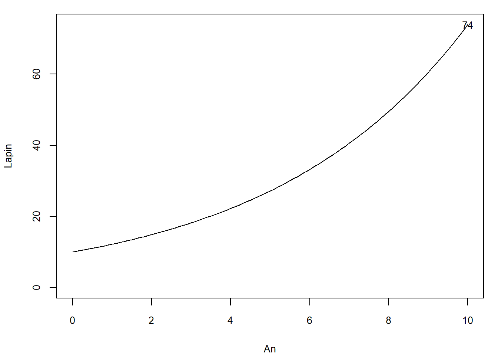
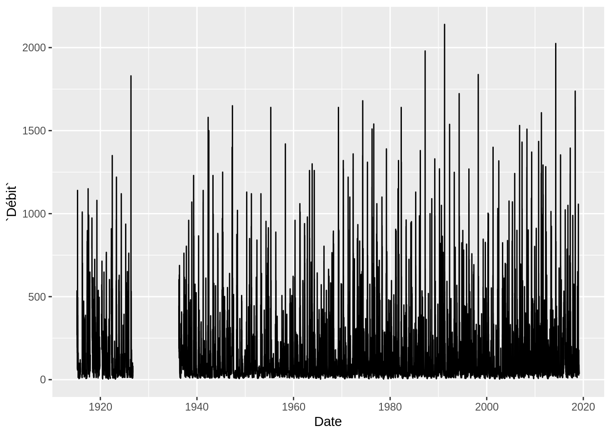
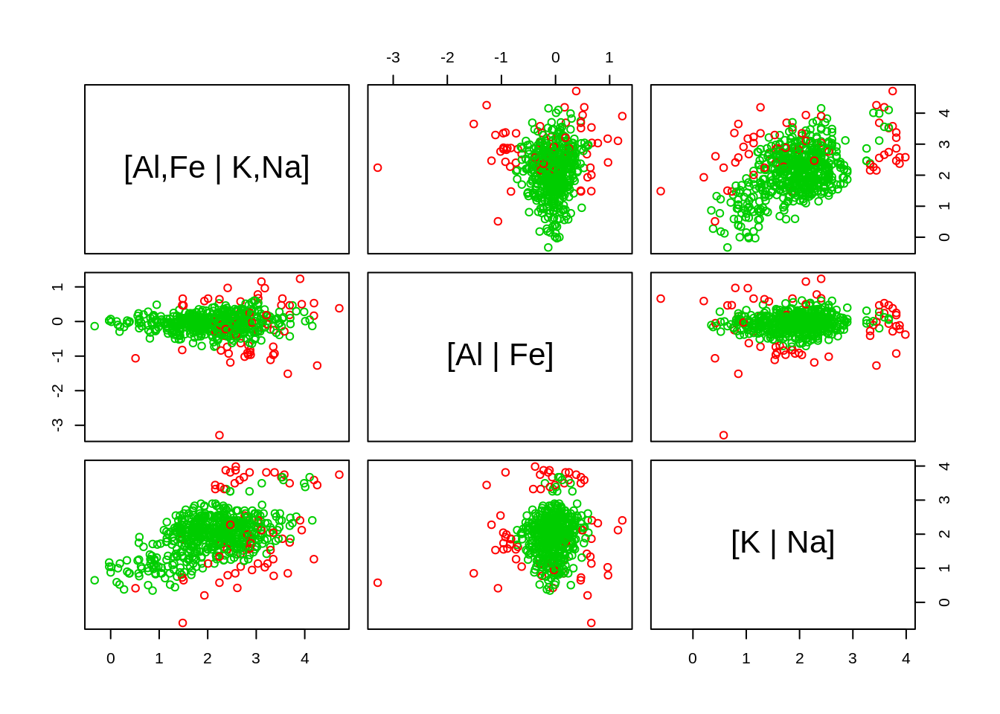
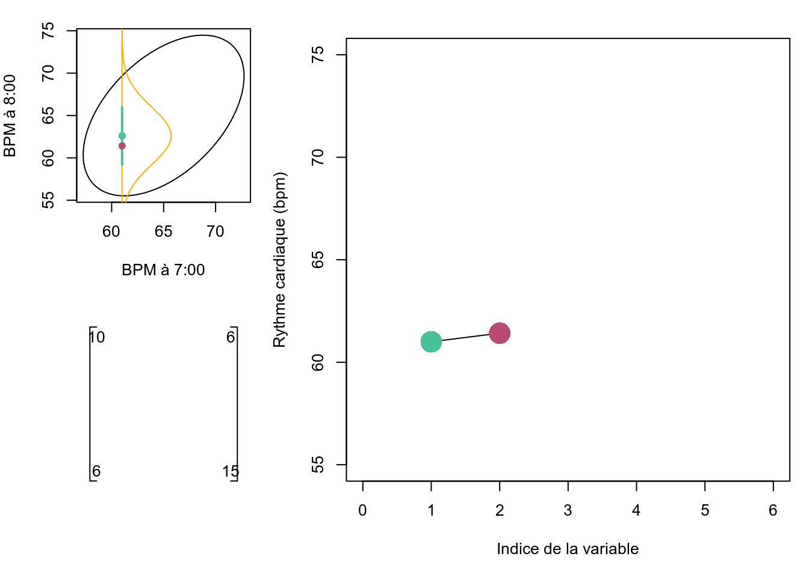
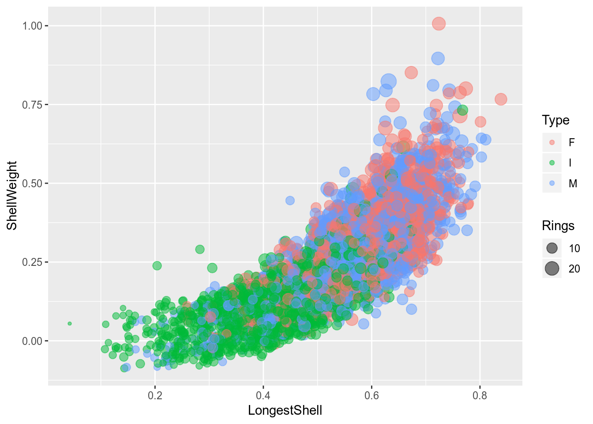
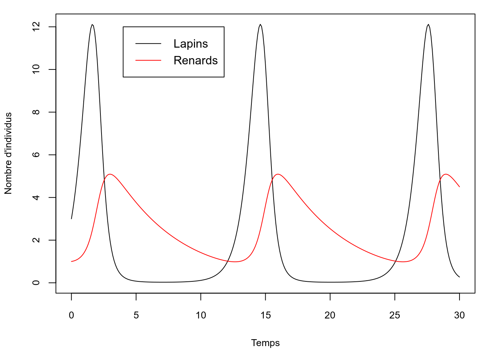
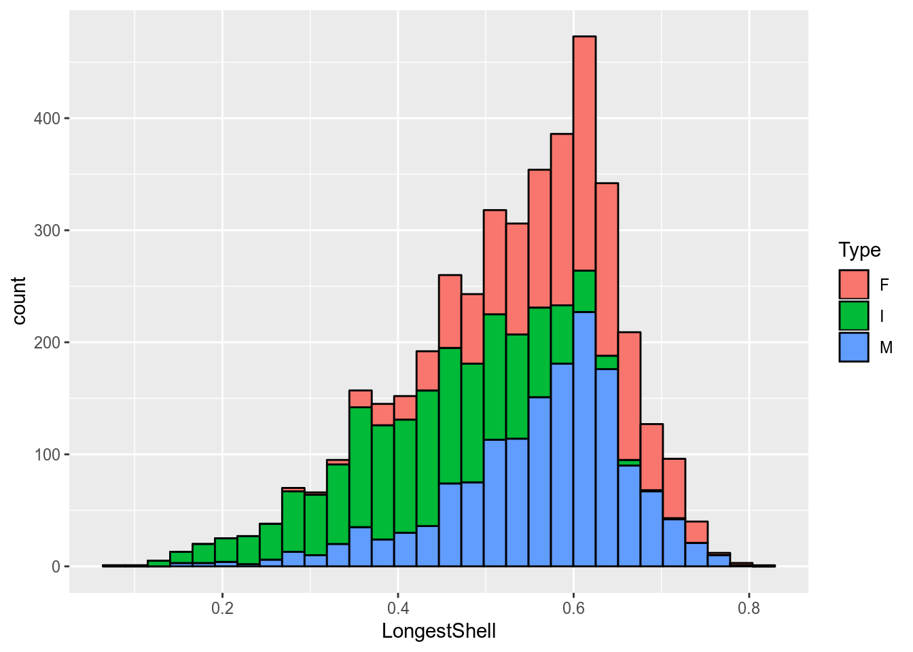
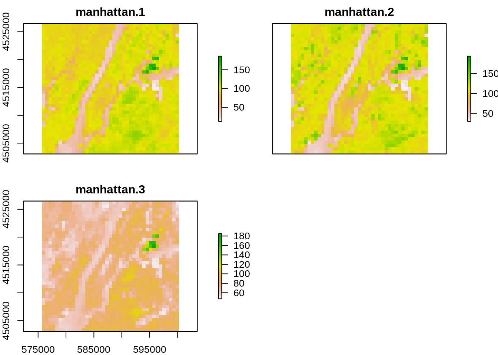
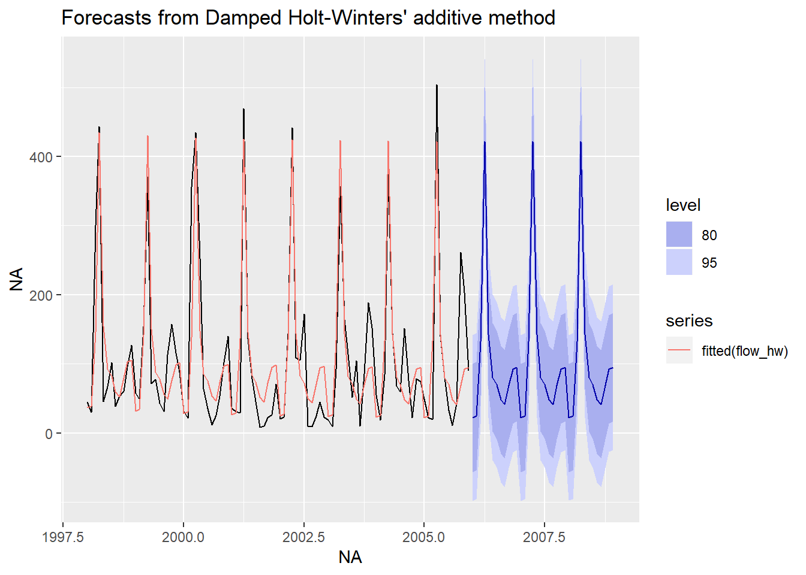
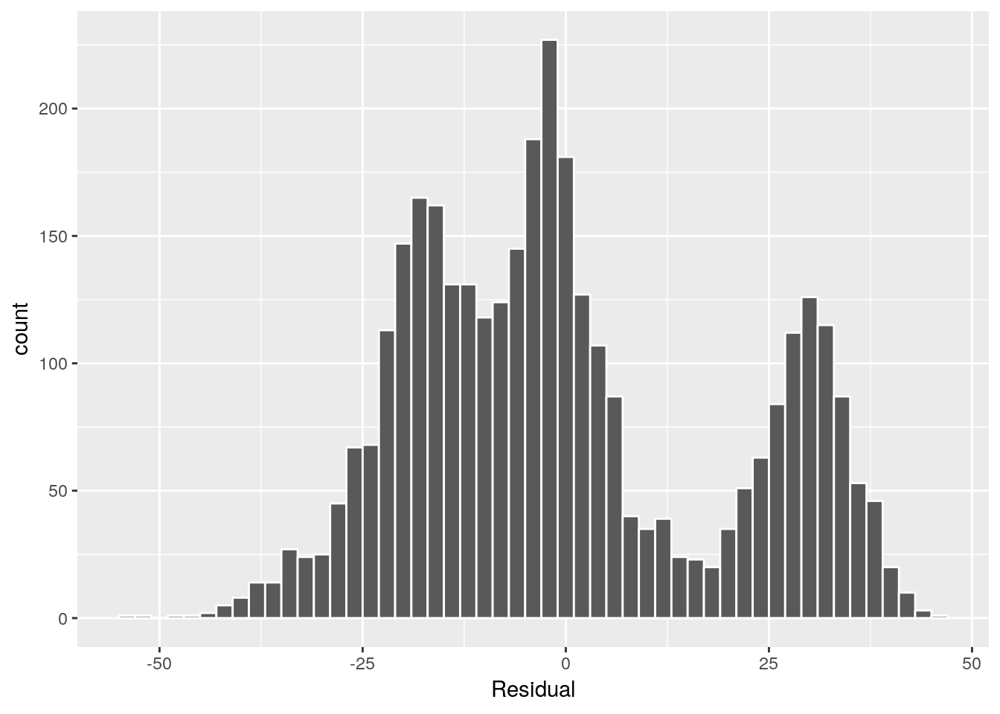

<!DOCTYPE html>
<html >

<head>

  <meta charset="UTF-8">
  <meta http-equiv="X-UA-Compatible" content="IE=edge">
  <title>4 Visualisation | Analyse et modlisation d’agrocosystmes</title>
  <meta name="description" content="Ce cours a pour objectif de former les tudiants gradus en gnie agroenvironnemental, gnie civil, gnie cologique, agronomie, biologie, foresterie et cologie en analyse et modlisation de systmes vivants. Les sujets traits sont lintroduction au langage de programmation R, lanalyse statistique descriptive, la visualisation, la modlisation infrentielle, prdictive et dterministe.">
  <meta name="generator" content="bookdown  and GitBook 2.6.7">

  <meta property="og:title" content="4 Visualisation | Analyse et modlisation d’agrocosystmes" />
  <meta property="og:type" content="book" />
  
  
  <meta property="og:description" content="Ce cours a pour objectif de former les tudiants gradus en gnie agroenvironnemental, gnie civil, gnie cologique, agronomie, biologie, foresterie et cologie en analyse et modlisation de systmes vivants. Les sujets traits sont lintroduction au langage de programmation R, lanalyse statistique descriptive, la visualisation, la modlisation infrentielle, prdictive et dterministe." />
  

  <meta name="twitter:card" content="summary" />
  <meta name="twitter:title" content="4 Visualisation | Analyse et modlisation d’agrocosystmes" />
  
  <meta name="twitter:description" content="Ce cours a pour objectif de former les tudiants gradus en gnie agroenvironnemental, gnie civil, gnie cologique, agronomie, biologie, foresterie et cologie en analyse et modlisation de systmes vivants. Les sujets traits sont lintroduction au langage de programmation R, lanalyse statistique descriptive, la visualisation, la modlisation infrentielle, prdictive et dterministe." />
  

<meta name="author" content="Serge-tienne Parent">


<meta name="date" content="2019-01-09">

  <meta name="viewport" content="width=device-width, initial-scale=1">
  <meta name="apple-mobile-web-app-capable" content="yes">
  <meta name="apple-mobile-web-app-status-bar-style" content="black">
  
  
<link rel="prev" href="chapitre-tableaux.html">
<link rel="next" href="chapitre-biostats.html">
<script src="libs/jquery-2.2.3/jquery.min.js"></script>
<link href="libs/gitbook-2.6.7/css/style.css" rel="stylesheet" />
<link href="libs/gitbook-2.6.7/css/plugin-table.css" rel="stylesheet" />
<link href="libs/gitbook-2.6.7/css/plugin-bookdown.css" rel="stylesheet" />
<link href="libs/gitbook-2.6.7/css/plugin-highlight.css" rel="stylesheet" />
<link href="libs/gitbook-2.6.7/css/plugin-search.css" rel="stylesheet" />
<link href="libs/gitbook-2.6.7/css/plugin-fontsettings.css" rel="stylesheet" />


<style type="text/css">
div.sourceCode { overflow-x: auto; }
table.sourceCode, tr.sourceCode, td.lineNumbers, td.sourceCode {
  margin: 0; padding: 0; vertical-align: baseline; border: none; }
table.sourceCode { width: 100%; line-height: 100%; }
td.lineNumbers { text-align: right; padding-right: 4px; padding-left: 4px; color: #aaaaaa; border-right: 1px solid #aaaaaa; }
td.sourceCode { padding-left: 5px; }
code > span.kw { color: #007020; font-weight: bold; } /* Keyword */
code > span.dt { color: #902000; } /* DataType */
code > span.dv { color: #40a070; } /* DecVal */
code > span.bn { color: #40a070; } /* BaseN */
code > span.fl { color: #40a070; } /* Float */
code > span.ch { color: #4070a0; } /* Char */
code > span.st { color: #4070a0; } /* String */
code > span.co { color: #60a0b0; font-style: italic; } /* Comment */
code > span.ot { color: #007020; } /* Other */
code > span.al { color: #ff0000; font-weight: bold; } /* Alert */
code > span.fu { color: #06287e; } /* Function */
code > span.er { color: #ff0000; font-weight: bold; } /* Error */
code > span.wa { color: #60a0b0; font-weight: bold; font-style: italic; } /* Warning */
code > span.cn { color: #880000; } /* Constant */
code > span.sc { color: #4070a0; } /* SpecialChar */
code > span.vs { color: #4070a0; } /* VerbatimString */
code > span.ss { color: #bb6688; } /* SpecialString */
code > span.im { } /* Import */
code > span.va { color: #19177c; } /* Variable */
code > span.cf { color: #007020; font-weight: bold; } /* ControlFlow */
code > span.op { color: #666666; } /* Operator */
code > span.bu { } /* BuiltIn */
code > span.ex { } /* Extension */
code > span.pp { color: #bc7a00; } /* Preprocessor */
code > span.at { color: #7d9029; } /* Attribute */
code > span.do { color: #ba2121; font-style: italic; } /* Documentation */
code > span.an { color: #60a0b0; font-weight: bold; font-style: italic; } /* Annotation */
code > span.cv { color: #60a0b0; font-weight: bold; font-style: italic; } /* CommentVar */
code > span.in { color: #60a0b0; font-weight: bold; font-style: italic; } /* Information */
</style>

</head>

<body>


  <div class="book without-animation with-summary font-size-2 font-family-1" data-basepath=".">

    <div class="book-summary">
      <nav role="navigation">

<ul class="summary">
<li class="chapter" data-level="1" data-path="index.html"><a href="index.html"><i class="fa fa-check"></i><b>1</b> Introduction</a><ul>
<li class="chapter" data-level="1.1" data-path="index.html"><a href="index.html#dfinitions"><i class="fa fa-check"></i><b>1.1</b> D<U+00E9>finitions</a></li>
<li class="chapter" data-level="1.2" data-path="index.html"><a href="index.html#qui-sadresse-ce-manuel"><i class="fa fa-check"></i><b>1.2</b> <U+00C0> qui s’adresse ce manuel?</a></li>
<li class="chapter" data-level="1.3" data-path="index.html"><a href="index.html#les-logiciels-libres"><i class="fa fa-check"></i><b>1.3</b> Les logiciels libres</a></li>
<li class="chapter" data-level="1.4" data-path="index.html"><a href="index.html#langage-de-programmation"><i class="fa fa-check"></i><b>1.4</b> Langage de programmation</a><ul>
<li class="chapter" data-level="1.4.1" data-path="index.html"><a href="index.html#r"><i class="fa fa-check"></i><b>1.4.1</b> R</a></li>
<li class="chapter" data-level="1.4.2" data-path="index.html"><a href="index.html#pourquoi-pas-python"><i class="fa fa-check"></i><b>1.4.2</b> Pourquoi pas Python?</a></li>
<li class="chapter" data-level="1.4.3" data-path="index.html"><a href="index.html#pourquoi-pas-matlab"><i class="fa fa-check"></i><b>1.4.3</b> Pourquoi pas Matlab?</a></li>
<li class="chapter" data-level="1.4.4" data-path="index.html"><a href="index.html#et-sas"><i class="fa fa-check"></i><b>1.4.4</b> Et… SAS?</a></li>
<li class="chapter" data-level="1.4.5" data-path="index.html"><a href="index.html#mais-pourquoi-pas-______"><i class="fa fa-check"></i><b>1.4.5</b> Mais pourquoi pas ______ ?</a></li>
</ul></li>
<li class="chapter" data-level="1.5" data-path="index.html"><a href="index.html#contenu-du-manuel"><i class="fa fa-check"></i><b>1.5</b> Contenu du manuel</a></li>
<li class="chapter" data-level="1.6" data-path="index.html"><a href="index.html#objectifs-gnraux"><i class="fa fa-check"></i><b>1.6</b> Objectifs g<U+00E9>n<U+00E9>raux</a></li>
<li class="chapter" data-level="1.7" data-path="index.html"><a href="index.html#lectures-complmentaires"><i class="fa fa-check"></i><b>1.7</b> Lectures compl<U+00E9>mentaires</a><ul>
<li class="chapter" data-level="1.7.1" data-path="index.html"><a href="index.html#cologie-mathmatique"><i class="fa fa-check"></i><b>1.7.1</b> <U+00C9>cologie math<U+00E9>matique</a></li>
<li class="chapter" data-level="1.7.2" data-path="index.html"><a href="index.html#programmation"><i class="fa fa-check"></i><b>1.7.2</b> Programmation</a></li>
<li class="chapter" data-level="1.7.3" data-path="index.html"><a href="index.html#divers"><i class="fa fa-check"></i><b>1.7.3</b> Divers</a></li>
</ul></li>
<li class="chapter" data-level="1.8" data-path="index.html"><a href="index.html#besoin-daide"><i class="fa fa-check"></i><b>1.8</b> Besoin d’aide?</a></li>
<li class="chapter" data-level="1.9" data-path="index.html"><a href="index.html#propos-de-lauteur"><i class="fa fa-check"></i><b>1.9</b> <U+00C0> propos de l’auteur</a></li>
<li class="chapter" data-level="1.10" data-path="index.html"><a href="index.html#un-cours-complmentaire-dautres-cours"><i class="fa fa-check"></i><b>1.10</b> Un cours compl<U+00E9>mentaire <U+00E0> d’autres cours</a></li>
<li class="chapter" data-level="1.11" data-path="index.html"><a href="index.html#contribuer-au-manuel"><i class="fa fa-check"></i><b>1.11</b> Contribuer au manuel</a></li>
</ul></li>
<li class="chapter" data-level="2" data-path="chapitre-intro-a-R.html"><a href="chapitre-intro-a-R.html"><i class="fa fa-check"></i><b>2</b> La science des donn<U+00E9>es avec R</a><ul>
<li class="chapter" data-level="2.1" data-path="chapitre-intro-a-R.html"><a href="chapitre-intro-a-R.html#statistiques-ou-science-des-donnes"><i class="fa fa-check"></i><b>2.1</b> Statistiques ou Science des donn<U+00E9>es?</a></li>
<li class="chapter" data-level="2.2" data-path="chapitre-intro-a-R.html"><a href="chapitre-intro-a-R.html#organiser-son-environnement-de-travail-en-r"><i class="fa fa-check"></i><b>2.2</b> Organiser son environnement de travail en R</a></li>
<li class="chapter" data-level="2.3" data-path="chapitre-intro-a-R.html"><a href="chapitre-intro-a-R.html#prparer-son-flux-de-travail"><i class="fa fa-check"></i><b>2.3</b> Pr<U+00E9>parer son flux de travail</a><ul>
<li class="chapter" data-level="2.3.1" data-path="chapitre-intro-a-R.html"><a href="chapitre-intro-a-R.html#installation-classique"><i class="fa fa-check"></i><b>2.3.1</b> Installation classique</a></li>
<li class="chapter" data-level="2.3.2" data-path="chapitre-intro-a-R.html"><a href="chapitre-intro-a-R.html#r-notebooks"><i class="fa fa-check"></i><b>2.3.2</b> R notebooks</a></li>
<li class="chapter" data-level="2.3.3" data-path="chapitre-intro-a-R.html"><a href="chapitre-intro-a-R.html#installation-avec-anaconda"><i class="fa fa-check"></i><b>2.3.3</b> Installation avec Anaconda</a></li>
</ul></li>
<li class="chapter" data-level="2.4" data-path="chapitre-intro-a-R.html"><a href="chapitre-intro-a-R.html#premiers-pas-avec-r"><i class="fa fa-check"></i><b>2.4</b> Premiers pas avec R</a><ul>
<li class="chapter" data-level="2.4.1" data-path="chapitre-intro-a-R.html"><a href="chapitre-intro-a-R.html#types-de-donnes"><i class="fa fa-check"></i><b>2.4.1</b> Types de donn<U+00E9>es</a></li>
<li class="chapter" data-level="2.4.2" data-path="chapitre-intro-a-R.html"><a href="chapitre-intro-a-R.html#les-collections-de-donnes"><i class="fa fa-check"></i><b>2.4.2</b> Les collections de donn<U+00E9>es</a></li>
<li class="chapter" data-level="2.4.3" data-path="chapitre-intro-a-R.html"><a href="chapitre-intro-a-R.html#les-fonctions"><i class="fa fa-check"></i><b>2.4.3</b> Les fonctions</a></li>
<li class="chapter" data-level="2.4.4" data-path="chapitre-intro-a-R.html"><a href="chapitre-intro-a-R.html#les-boucles"><i class="fa fa-check"></i><b>2.4.4</b> Les boucles</a></li>
<li class="chapter" data-level="2.4.5" data-path="chapitre-intro-a-R.html"><a href="chapitre-intro-a-R.html#conditions-if-else-if-else"><i class="fa fa-check"></i><b>2.4.5</b> Conditions: if, else if, else</a></li>
<li class="chapter" data-level="2.4.6" data-path="chapitre-intro-a-R.html"><a href="chapitre-intro-a-R.html#installer-et-charger-un-module"><i class="fa fa-check"></i><b>2.4.6</b> Installer et charger un module</a></li>
</ul></li>
<li class="chapter" data-level="2.5" data-path="chapitre-intro-a-R.html"><a href="chapitre-intro-a-R.html#enfin"><i class="fa fa-check"></i><b>2.5</b> Enfin…</a></li>
</ul></li>
<li class="chapter" data-level="3" data-path="chapitre-tableaux.html"><a href="chapitre-tableaux.html"><i class="fa fa-check"></i><b>3</b> Organisation des donn<U+00E9>es et op<U+00E9>rations sur des tableaux</a><ul>
<li class="chapter" data-level="3.1" data-path="chapitre-tableaux.html"><a href="chapitre-tableaux.html#les-collections-de-donnes-1"><i class="fa fa-check"></i><b>3.1</b> Les collections de donn<U+00E9>es</a></li>
<li class="chapter" data-level="3.2" data-path="chapitre-tableaux.html"><a href="chapitre-tableaux.html#organiser-un-tableau-de-donnes"><i class="fa fa-check"></i><b>3.2</b> Organiser un tableau de donn<U+00E9>es</a></li>
<li class="chapter" data-level="3.3" data-path="chapitre-tableaux.html"><a href="chapitre-tableaux.html#formats-de-tableau"><i class="fa fa-check"></i><b>3.3</b> Formats de tableau</a><ul>
<li class="chapter" data-level="3.3.1" data-path="chapitre-tableaux.html"><a href="chapitre-tableaux.html#xls-ou-xlsx"><i class="fa fa-check"></i><b>3.3.1</b> <em>xls</em> ou <em>xlsx</em></a></li>
<li class="chapter" data-level="3.3.2" data-path="chapitre-tableaux.html"><a href="chapitre-tableaux.html#csv"><i class="fa fa-check"></i><b>3.3.2</b> <em>csv</em></a></li>
<li class="chapter" data-level="3.3.3" data-path="chapitre-tableaux.html"><a href="chapitre-tableaux.html#json"><i class="fa fa-check"></i><b>3.3.3</b> <em>json</em></a></li>
<li class="chapter" data-level="3.3.4" data-path="chapitre-tableaux.html"><a href="chapitre-tableaux.html#sqlite"><i class="fa fa-check"></i><b>3.3.4</b> SQLite</a></li>
<li class="chapter" data-level="3.3.5" data-path="chapitre-tableaux.html"><a href="chapitre-tableaux.html#suggestion"><i class="fa fa-check"></i><b>3.3.5</b> Suggestion</a></li>
</ul></li>
<li class="chapter" data-level="3.4" data-path="chapitre-tableaux.html"><a href="chapitre-tableaux.html#entreposer-ses-donnes"><i class="fa fa-check"></i><b>3.4</b> Entreposer ses donn<U+00E9>es</a></li>
<li class="chapter" data-level="3.5" data-path="chapitre-tableaux.html"><a href="chapitre-tableaux.html#manipuler-des-donnes-en-mode-tidyverse"><i class="fa fa-check"></i><b>3.5</b> Manipuler des donn<U+00E9>es en mode tidyverse</a><ul>
<li class="chapter" data-level="3.5.1" data-path="chapitre-tableaux.html"><a href="chapitre-tableaux.html#importer-vos-donnes-dans-voter-session-de-travail"><i class="fa fa-check"></i><b>3.5.1</b> Importer vos donn<U+00E9>es dans voter session de travail</a></li>
<li class="chapter" data-level="3.5.2" data-path="chapitre-tableaux.html"><a href="chapitre-tableaux.html#comment-slectionner-et-filtrer-des-donnes"><i class="fa fa-check"></i><b>3.5.2</b> Comment s<U+00E9>lectionner et filtrer des donn<U+00E9>es?</a></li>
<li class="chapter" data-level="3.5.3" data-path="chapitre-tableaux.html"><a href="chapitre-tableaux.html#le-format-long-et-le-format-large"><i class="fa fa-check"></i><b>3.5.3</b> Le format long et le format large</a></li>
<li class="chapter" data-level="3.5.4" data-path="chapitre-tableaux.html"><a href="chapitre-tableaux.html#combiner-des-tableaux"><i class="fa fa-check"></i><b>3.5.4</b> Combiner des tableaux</a></li>
<li class="chapter" data-level="3.5.5" data-path="chapitre-tableaux.html"><a href="chapitre-tableaux.html#oprations-sur-les-tableaux"><i class="fa fa-check"></i><b>3.5.5</b> Op<U+00E9>rations sur les tableaux</a></li>
<li class="chapter" data-level="3.5.6" data-path="chapitre-tableaux.html"><a href="chapitre-tableaux.html#exemple-difficile"><i class="fa fa-check"></i><b>3.5.6</b> Exemple (difficile)</a></li>
<li class="chapter" data-level="3.5.7" data-path="chapitre-tableaux.html"><a href="chapitre-tableaux.html#exporter-un-tableau"><i class="fa fa-check"></i><b>3.5.7</b> Exporter un tableau</a></li>
<li class="chapter" data-level="3.5.8" data-path="chapitre-tableaux.html"><a href="chapitre-tableaux.html#aller-plus-loin-dans-le-tidyverse"><i class="fa fa-check"></i><b>3.5.8</b> Aller plus loin dans le tidyverse</a></li>
</ul></li>
<li class="chapter" data-level="3.6" data-path="chapitre-tableaux.html"><a href="chapitre-tableaux.html#rfrences"><i class="fa fa-check"></i><b>3.6</b> R<U+00E9>f<U+00E9>rences</a></li>
</ul></li>
<li class="chapter" data-level="4" data-path="chapitre-visualisation.html"><a href="chapitre-visualisation.html"><i class="fa fa-check"></i><b>4</b> Visualisation</a><ul>
<li class="chapter" data-level="4.1" data-path="chapitre-visualisation.html"><a href="chapitre-visualisation.html#pourquoi-explorer-graphiquement"><i class="fa fa-check"></i><b>4.1</b> Pourquoi explorer graphiquement?</a></li>
<li class="chapter" data-level="4.2" data-path="chapitre-visualisation.html"><a href="chapitre-visualisation.html#publier-un-graphique"><i class="fa fa-check"></i><b>4.2</b> Publier un graphique</a><ul>
<li class="chapter" data-level="4.2.1" data-path="chapitre-visualisation.html"><a href="chapitre-visualisation.html#cinq-qualits-dun-bon-graphique"><i class="fa fa-check"></i><b>4.2.1</b> Cinq qualit<U+00E9>s d’un bon graphique</a></li>
</ul></li>
<li class="chapter" data-level="4.3" data-path="chapitre-visualisation.html"><a href="chapitre-visualisation.html#choisir-le-type-de-graphique-le-plus-appropri"><i class="fa fa-check"></i><b>4.3</b> Choisir le type de graphique le plus appropri<U+00E9></a></li>
<li class="chapter" data-level="4.4" data-path="chapitre-visualisation.html"><a href="chapitre-visualisation.html#choisir-son-outils-de-visualisation"><i class="fa fa-check"></i><b>4.4</b> Choisir son outils de visualisation</a><ul>
<li class="chapter" data-level="4.4.1" data-path="chapitre-visualisation.html"><a href="chapitre-visualisation.html#approche-imprative"><i class="fa fa-check"></i><b>4.4.1</b> Approche imp<U+00E9>rative</a></li>
<li class="chapter" data-level="4.4.2" data-path="chapitre-visualisation.html"><a href="chapitre-visualisation.html#approche-dclarative"><i class="fa fa-check"></i><b>4.4.2</b> Approche d<U+00E9>clarative</a></li>
</ul></li>
<li class="chapter" data-level="4.5" data-path="chapitre-visualisation.html"><a href="chapitre-visualisation.html#visualisation-en-r"><i class="fa fa-check"></i><b>4.5</b> Visualisation en R</a></li>
<li class="chapter" data-level="4.6" data-path="chapitre-visualisation.html"><a href="chapitre-visualisation.html#module-de-base-pour-les-graphiques"><i class="fa fa-check"></i><b>4.6</b> Module de base pour les graphiques</a></li>
<li class="chapter" data-level="4.7" data-path="chapitre-visualisation.html"><a href="chapitre-visualisation.html#la-grammaire-graphique-ggplot2"><i class="fa fa-check"></i><b>4.7</b> La grammaire graphique ggplot2</a></li>
<li class="chapter" data-level="4.8" data-path="chapitre-visualisation.html"><a href="chapitre-visualisation.html#mon-premier-ggplot"><i class="fa fa-check"></i><b>4.8</b> Mon premier ggplot</a><ul>
<li class="chapter" data-level="4.8.1" data-path="chapitre-visualisation.html"><a href="chapitre-visualisation.html#plusieurs-sources-de-donnes"><i class="fa fa-check"></i><b>4.8.1</b> Plusieurs sources de donn<c3><a9>es</a></li>
<li class="chapter" data-level="4.8.2" data-path="chapitre-visualisation.html"><a href="chapitre-visualisation.html#exporter-avec-style"><i class="fa fa-check"></i><b>4.8.2</b> Exporter avec style</a></li>
<li class="chapter" data-level="4.8.3" data-path="chapitre-visualisation.html"><a href="chapitre-visualisation.html#nuages-de-points"><i class="fa fa-check"></i><b>4.8.3</b> Nuages de points</a></li>
<li class="chapter" data-level="4.8.4" data-path="chapitre-visualisation.html"><a href="chapitre-visualisation.html#diagrammes-en-lignes"><i class="fa fa-check"></i><b>4.8.4</b> Diagrammes en lignes</a></li>
<li class="chapter" data-level="4.8.5" data-path="chapitre-visualisation.html"><a href="chapitre-visualisation.html#les-histogrammes"><i class="fa fa-check"></i><b>4.8.5</b> Les histogrammes</a></li>
<li class="chapter" data-level="4.8.6" data-path="chapitre-visualisation.html"><a href="chapitre-visualisation.html#boxplots"><i class="fa fa-check"></i><b>4.8.6</b> Boxplots</a></li>
<li class="chapter" data-level="4.8.7" data-path="chapitre-visualisation.html"><a href="chapitre-visualisation.html#les-diagrammes-en-barre"><i class="fa fa-check"></i><b>4.8.7</b> Les diagrammes en barre</a></li>
<li class="chapter" data-level="4.8.8" data-path="chapitre-visualisation.html"><a href="chapitre-visualisation.html#exporter-un-graphique"><i class="fa fa-check"></i><b>4.8.8</b> Exporter un graphique</a></li>
</ul></li>
<li class="chapter" data-level="4.9" data-path="chapitre-visualisation.html"><a href="chapitre-visualisation.html#les-graphiques-comme-outil-dexploration-des-donnes"><i class="fa fa-check"></i><b>4.9</b> Les graphiques comme outil d’exploration des donn<c3><a9>es</a><ul>
<li class="chapter" data-level="4.9.1" data-path="chapitre-visualisation.html"><a href="chapitre-visualisation.html#des-graphiques-interactifs"><i class="fa fa-check"></i><b>4.9.1</b> Des graphiques interactifs!</a></li>
<li class="chapter" data-level="4.9.2" data-path="chapitre-visualisation.html"><a href="chapitre-visualisation.html#des-extensions-de-ggplot2"><i class="fa fa-check"></i><b>4.9.2</b> Des extensions de ggplot2</a></li>
<li class="chapter" data-level="4.9.3" data-path="chapitre-visualisation.html"><a href="chapitre-visualisation.html#aller-plus-loin-avec-ggplot2"><i class="fa fa-check"></i><b>4.9.3</b> Aller plus loin avec ggplot2</a></li>
</ul></li>
<li class="chapter" data-level="4.10" data-path="chapitre-visualisation.html"><a href="chapitre-visualisation.html#choisir-les-bonnes-couleurs"><i class="fa fa-check"></i><b>4.10</b> Choisir les bonnes couleurs</a></li>
<li class="chapter" data-level="4.11" data-path="chapitre-visualisation.html"><a href="chapitre-visualisation.html#rgles-particulires"><i class="fa fa-check"></i><b>4.11</b> R<U+00E8>gles particuli<U+00E8>res</a><ul>
<li class="chapter" data-level="4.11.1" data-path="chapitre-visualisation.html"><a href="chapitre-visualisation.html#ne-tronquez-pas-inutilement-laxe-des-y"><i class="fa fa-check"></i><b>4.11.1</b> Ne tronquez pas inutilement l’axe des <span class="math inline">\(y\)</span></a></li>
<li class="chapter" data-level="4.11.2" data-path="chapitre-visualisation.html"><a href="chapitre-visualisation.html#utilisez-un-encrage-proportionnel"><i class="fa fa-check"></i><b>4.11.2</b> Utilisez un encrage proportionnel</a></li>
<li class="chapter" data-level="4.11.3" data-path="chapitre-visualisation.html"><a href="chapitre-visualisation.html#publiez-vos-donnes"><i class="fa fa-check"></i><b>4.11.3</b> Publiez vos donn<U+00E9>es</a></li>
<li class="chapter" data-level="4.11.4" data-path="chapitre-visualisation.html"><a href="chapitre-visualisation.html#vitez-de-distraire-avec-des-dcorations-futiles"><i class="fa fa-check"></i><b>4.11.4</b> <U+00C9>vitez de distraire avec des d<U+00E9>corations futiles</a></li>
<li class="chapter" data-level="4.11.5" data-path="chapitre-visualisation.html"><a href="chapitre-visualisation.html#visitez-www.junkcharts.typepad.com-de-temps-autre"><i class="fa fa-check"></i><b>4.11.5</b> Visitez www.junkcharts.typepad.com de temps <U+00E0> autre</a></li>
</ul></li>
</ul></li>
<li class="chapter" data-level="5" data-path="chapitre-biostats.html"><a href="chapitre-biostats.html"><i class="fa fa-check"></i><b>5</b> Biostatistiques</a><ul>
<li class="chapter" data-level="5.1" data-path="chapitre-biostats.html"><a href="chapitre-biostats.html#populations-et-chantillons"><i class="fa fa-check"></i><b>5.1</b> Populations et <U+00E9>chantillons</a></li>
<li class="chapter" data-level="5.2" data-path="chapitre-biostats.html"><a href="chapitre-biostats.html#les-variables"><i class="fa fa-check"></i><b>5.2</b> Les variables</a><ul>
<li class="chapter" data-level="5.2.1" data-path="chapitre-biostats.html"><a href="chapitre-biostats.html#variables-quantitatives"><i class="fa fa-check"></i><b>5.2.1</b> Variables quantitatives</a></li>
<li class="chapter" data-level="5.2.2" data-path="chapitre-biostats.html"><a href="chapitre-biostats.html#variables-qualitatives"><i class="fa fa-check"></i><b>5.2.2</b> Variables qualitatives</a></li>
</ul></li>
<li class="chapter" data-level="5.3" data-path="chapitre-biostats.html"><a href="chapitre-biostats.html#les-probabilits"><i class="fa fa-check"></i><b>5.3</b> Les probabilit<U+00E9>s</a></li>
<li class="chapter" data-level="5.4" data-path="chapitre-biostats.html"><a href="chapitre-biostats.html#les-distributions"><i class="fa fa-check"></i><b>5.4</b> Les distributions</a><ul>
<li class="chapter" data-level="5.4.1" data-path="chapitre-biostats.html"><a href="chapitre-biostats.html#distribution-binomiale"><i class="fa fa-check"></i><b>5.4.1</b> Distribution binomiale</a></li>
<li class="chapter" data-level="5.4.2" data-path="chapitre-biostats.html"><a href="chapitre-biostats.html#distribution-de-poisson"><i class="fa fa-check"></i><b>5.4.2</b> Distribution de Poisson</a></li>
<li class="chapter" data-level="5.4.3" data-path="chapitre-biostats.html"><a href="chapitre-biostats.html#distribution-uniforme"><i class="fa fa-check"></i><b>5.4.3</b> Distribution uniforme</a></li>
<li class="chapter" data-level="5.4.4" data-path="chapitre-biostats.html"><a href="chapitre-biostats.html#distribution-normale"><i class="fa fa-check"></i><b>5.4.4</b> Distribution normale</a></li>
</ul></li>
<li class="chapter" data-level="5.5" data-path="chapitre-biostats.html"><a href="chapitre-biostats.html#statistiques-descriptives"><i class="fa fa-check"></i><b>5.5</b> Statistiques descriptives</a></li>
<li class="chapter" data-level="5.6" data-path="chapitre-biostats.html"><a href="chapitre-biostats.html#tests-dhypothses-un-et-deux-chantillons"><i class="fa fa-check"></i><b>5.6</b> Tests d’hypoth<U+00E8>ses <U+00E0> un et deux <U+00E9>chantillons</a><ul>
<li class="chapter" data-level="5.6.1" data-path="chapitre-biostats.html"><a href="chapitre-biostats.html#test-de-t-un-seul-chantillon"><i class="fa fa-check"></i><b>5.6.1</b> Test de t <U+00E0> un seul <U+00E9>chantillon</a></li>
<li class="chapter" data-level="5.6.2" data-path="chapitre-biostats.html"><a href="chapitre-biostats.html#attention-mauvaises-interprtations-des-p-values"><i class="fa fa-check"></i><b>5.6.2</b> Attention: mauvaises interpr<U+00E9>tations des <em>p-values</em></a></li>
<li class="chapter" data-level="5.6.3" data-path="chapitre-biostats.html"><a href="chapitre-biostats.html#test-de-wilcoxon-un-seul-chantillon"><i class="fa fa-check"></i><b>5.6.3</b> Test de Wilcoxon <U+00E0> un seul <U+00E9>chantillon</a></li>
<li class="chapter" data-level="5.6.4" data-path="chapitre-biostats.html"><a href="chapitre-biostats.html#tests-de-t-deux-chantillons"><i class="fa fa-check"></i><b>5.6.4</b> Tests de t <U+00E0> deux <U+00E9>chantillons</a></li>
<li class="chapter" data-level="5.6.5" data-path="chapitre-biostats.html"><a href="chapitre-biostats.html#comparaison-des-variances"><i class="fa fa-check"></i><b>5.6.5</b> Comparaison des variances</a></li>
<li class="chapter" data-level="5.6.6" data-path="chapitre-biostats.html"><a href="chapitre-biostats.html#tests-de-wilcoxon-deux-chantillons"><i class="fa fa-check"></i><b>5.6.6</b> Tests de Wilcoxon <U+00E0> deux <U+00E9>chantillons</a></li>
<li class="chapter" data-level="5.6.7" data-path="chapitre-biostats.html"><a href="chapitre-biostats.html#les-tests-pairs"><i class="fa fa-check"></i><b>5.6.7</b> Les tests pair<U+00E9>s</a></li>
</ul></li>
<li class="chapter" data-level="5.7" data-path="chapitre-biostats.html"><a href="chapitre-biostats.html#lanalyse-de-variance"><i class="fa fa-check"></i><b>5.7</b> L’analyse de variance</a></li>
<li class="chapter" data-level="5.8" data-path="chapitre-biostats.html"><a href="chapitre-biostats.html#les-modles-statistiques"><i class="fa fa-check"></i><b>5.8</b> Les mod<U+00E8>les statistiques</a><ul>
<li class="chapter" data-level="5.8.1" data-path="chapitre-biostats.html"><a href="chapitre-biostats.html#modles-effets-fixes"><i class="fa fa-check"></i><b>5.8.1</b> Mod<U+00E8>les <U+00E0> effets fixes</a></li>
<li class="chapter" data-level="5.8.2" data-path="chapitre-biostats.html"><a href="chapitre-biostats.html#modles-effets-mixtes"><i class="fa fa-check"></i><b>5.8.2</b> Mod<U+00E8>les <U+00E0> effets mixtes</a></li>
<li class="chapter" data-level="5.8.3" data-path="chapitre-biostats.html"><a href="chapitre-biostats.html#aller-plus-loin"><i class="fa fa-check"></i><b>5.8.3</b> Aller plus loin</a></li>
</ul></li>
</ul></li>
<li class="chapter" data-level="6" data-path="chapitre-biostats-bayes.html"><a href="chapitre-biostats-bayes.html"><i class="fa fa-check"></i><b>6</b> Introduction <U+00E0> l’analyse bay<U+00E9>sienne en <U+00E9>cologie</a><ul>
<li class="chapter" data-level="6.1" data-path="chapitre-biostats-bayes.html"><a href="chapitre-biostats-bayes.html#quest-ce-que-cest"><i class="fa fa-check"></i><b>6.1</b> Qu’est-ce que c’est?</a></li>
<li class="chapter" data-level="6.2" data-path="chapitre-biostats-bayes.html"><a href="chapitre-biostats-bayes.html#pourquoi-lutiliser"><i class="fa fa-check"></i><b>6.2</b> Pourquoi l’utiliser?</a></li>
<li class="chapter" data-level="6.3" data-path="chapitre-biostats-bayes.html"><a href="chapitre-biostats-bayes.html#comment-lutiliser"><i class="fa fa-check"></i><b>6.3</b> Comment l’utiliser?</a></li>
<li class="chapter" data-level="6.4" data-path="chapitre-biostats-bayes.html"><a href="chapitre-biostats-bayes.html#faucons-plerins"><i class="fa fa-check"></i><b>6.4</b> Faucons p<U+00E9>lerins</a></li>
<li class="chapter" data-level="6.5" data-path="chapitre-biostats-bayes.html"><a href="chapitre-biostats-bayes.html#statistiques-dune-population"><i class="fa fa-check"></i><b>6.5</b> Statistiques d’une population</a><ul>
<li class="chapter" data-level="6.5.1" data-path="chapitre-biostats-bayes.html"><a href="chapitre-biostats-bayes.html#greta"><i class="fa fa-check"></i><b>6.5.1</b> greta</a></li>
</ul></li>
<li class="chapter" data-level="6.6" data-path="chapitre-biostats-bayes.html"><a href="chapitre-biostats-bayes.html#test-de-t-diffrence-entre-des-groupes"><i class="fa fa-check"></i><b>6.6</b> Test de t: Diff<U+00E9>rence entre des groupes</a></li>
<li class="chapter" data-level="6.7" data-path="chapitre-biostats-bayes.html"><a href="chapitre-biostats-bayes.html#pour-aller-plus-loin"><i class="fa fa-check"></i><b>6.7</b> Pour aller plus loin</a></li>
</ul></li>
<li class="chapter" data-level="7" data-path="chapitre-preprocess.html"><a href="chapitre-preprocess.html"><i class="fa fa-check"></i><b>7</b> Pr<U+00E9>traitement des donn<U+00E9>es</a><ul>
<li class="chapter" data-level="7.1" data-path="chapitre-preprocess.html"><a href="chapitre-preprocess.html#transformation"><i class="fa fa-check"></i><b>7.1</b> Transformation</a></li>
<li class="chapter" data-level="7.2" data-path="chapitre-preprocess.html"><a href="chapitre-preprocess.html#standardisation"><i class="fa fa-check"></i><b>7.2</b> Standardisation</a></li>
<li class="chapter" data-level="7.3" data-path="chapitre-preprocess.html"><a href="chapitre-preprocess.html#lchelle-de-la-plage"><i class="fa fa-check"></i><b>7.3</b> <U+00C0> l’<U+00E9>chelle de la plage</a></li>
<li class="chapter" data-level="7.4" data-path="chapitre-preprocess.html"><a href="chapitre-preprocess.html#box-cox"><i class="fa fa-check"></i><b>7.4</b> Box-Cox</a></li>
<li class="chapter" data-level="7.5" data-path="chapitre-preprocess.html"><a href="chapitre-preprocess.html#encodage-catgoriel"><i class="fa fa-check"></i><b>7.5</b> Encodage cat<U+00E9>goriel</a></li>
<li class="chapter" data-level="7.6" data-path="chapitre-preprocess.html"><a href="chapitre-preprocess.html#analyse-compositionnelle"><i class="fa fa-check"></i><b>7.6</b> Analyse compositionnelle</a></li>
</ul></li>
<li class="chapter" data-level="8" data-path="chapitre-ordination.html"><a href="chapitre-ordination.html"><i class="fa fa-check"></i><b>8</b> Association, partitionnement et ordination</a><ul>
<li class="chapter" data-level="8.1" data-path="chapitre-ordination.html"><a href="chapitre-ordination.html#espaces-danalyse"><i class="fa fa-check"></i><b>8.1</b> Espaces d’analyse</a><ul>
<li class="chapter" data-level="8.1.1" data-path="chapitre-ordination.html"><a href="chapitre-ordination.html#abondance-et-occurence"><i class="fa fa-check"></i><b>8.1.1</b> Abondance et occurence</a></li>
<li class="chapter" data-level="8.1.2" data-path="chapitre-ordination.html"><a href="chapitre-ordination.html#environnement"><i class="fa fa-check"></i><b>8.1.2</b> Environnement</a></li>
</ul></li>
<li class="chapter" data-level="8.2" data-path="chapitre-ordination.html"><a href="chapitre-ordination.html#analyse-dassociation"><i class="fa fa-check"></i><b>8.2</b> Analyse d’association</a><ul>
<li class="chapter" data-level="8.2.1" data-path="chapitre-ordination.html"><a href="chapitre-ordination.html#association-entre-objets-mode-q"><i class="fa fa-check"></i><b>8.2.1</b> Association entre objets (mode Q)</a></li>
<li class="chapter" data-level="8.2.2" data-path="chapitre-ordination.html"><a href="chapitre-ordination.html#associations-entre-variables-mode-r"><i class="fa fa-check"></i><b>8.2.2</b> Associations entre variables (mode R)</a></li>
<li class="chapter" data-level="8.2.3" data-path="chapitre-ordination.html"><a href="chapitre-ordination.html#conclusion-sur-les-as2019-01-09nnement"><i class="fa fa-check"></i><b>8.2.3</b> Conclusion sur les as2019-01-09nnement</a></li>
<li class="chapter" data-level="8.2.4" data-path="chapitre-ordination.html"><a href="chapitre-ordination.html#valuation-dun-partitionnement"><i class="fa fa-check"></i><b>8.2.4</b> <U+00C9>valuation d’un partitionnement</a></li>
<li class="chapter" data-level="8.2.5" data-path="chapitre-ordination.html"><a href="chapitre-ordination.html#partitionnement-non-hirarchique"><i class="fa fa-check"></i><b>8.2.5</b> Partitionnement non hi<U+00E9>rarchique</a></li>
</ul></li>
</ul></li>
<li class="chapter" data-level="9" data-path="chapitre-outliers.html"><a href="chapitre-outliers.html"><i class="fa fa-check"></i><b>9</b> D<U+00E9>tection de valeurs aberrantes et imputation</a></li>
<li class="chapter" data-level="10" data-path="chapitre-git.html"><a href="chapitre-git.html"><i class="fa fa-check"></i><b>10</b> Science ouverte et suivi de version</a></li>
<li class="chapter" data-level="11" data-path="chapitre-ml.html"><a href="chapitre-ml.html"><i class="fa fa-check"></i><b>11</b> Autoapprentissage</a><ul>
<li class="chapter" data-level="11.1" data-path="chapitre-ml.html"><a href="chapitre-ml.html#objectifs"><i class="fa fa-check"></i><b>11.1</b> Objectifs</a></li>
<li class="chapter" data-level="11.2" data-path="chapitre-ml.html"><a href="chapitre-ml.html#lexique"><i class="fa fa-check"></i><b>11.2</b> Lexique</a></li>
<li class="chapter" data-level="11.3" data-path="chapitre-ml.html"><a href="chapitre-ml.html#dmarche"><i class="fa fa-check"></i><b>11.3</b> D<U+00E9>marche</a><ul>
<li class="chapter" data-level="11.3.1" data-path="chapitre-ml.html"><a href="chapitre-ml.html#prtraitement"><i class="fa fa-check"></i><b>11.3.1</b> Pr<U+00E9>traitement</a></li>
<li class="chapter" data-level="11.3.2" data-path="chapitre-ml.html"><a href="chapitre-ml.html#entranement-et-test"><i class="fa fa-check"></i><b>11.3.2</b> Entra<U+00EE>nement et test</a></li>
<li class="chapter" data-level="11.3.3" data-path="chapitre-ml.html"><a href="chapitre-ml.html#sousapprentissage-et-surapprentissage"><i class="fa fa-check"></i><b>11.3.3</b> Sousapprentissage et surapprentissage</a></li>
<li class="chapter" data-level="11.3.4" data-path="chapitre-ml.html"><a href="chapitre-ml.html#validation-croise"><i class="fa fa-check"></i><b>11.3.4</b> Validation crois<U+00E9>e</a></li>
<li class="chapter" data-level="11.3.5" data-path="chapitre-ml.html"><a href="chapitre-ml.html#choix-de-lalgorithme-dapprentissage"><i class="fa fa-check"></i><b>11.3.5</b> Choix de l’algorithme d’apprentissage</a></li>
<li class="chapter" data-level="11.3.6" data-path="chapitre-ml.html"><a href="chapitre-ml.html#dploiement"><i class="fa fa-check"></i><b>11.3.6</b> D<U+00E9>ploiement</a></li>
</ul></li>
<li class="chapter" data-level="11.4" data-path="chapitre-ml.html"><a href="chapitre-ml.html#algorithmes"><i class="fa fa-check"></i><b>11.4</b> Algorithmes</a></li>
<li class="chapter" data-level="11.5" data-path="chapitre-ml.html"><a href="chapitre-ml.html#lautoapprentissage-en-r"><i class="fa fa-check"></i><b>11.5</b> L’autoapprentissage en R</a></li>
<li class="chapter" data-level="11.6" data-path="chapitre-ml.html"><a href="chapitre-ml.html#les-k-plus-proches-voisins"><i class="fa fa-check"></i><b>11.6</b> Les <em>k</em> plus proches voisins</a><ul>
<li class="chapter" data-level="11.6.1" data-path="chapitre-ml.html"><a href="chapitre-ml.html#exemple-dapplication-1"><i class="fa fa-check"></i><b>11.6.1</b> Exemple d’application</a></li>
</ul></li>
<li class="chapter" data-level="11.7" data-path="chapitre-ml.html"><a href="chapitre-ml.html#les-arbres-dcisio2019-01-09euronaux"><i class="fa fa-check"></i><b>11.7</b> Les arbres d<U+00E9>cisio2019-01-09euronaux</a><ul>
<li class="chapter" data-level="11.7.1" data-path="chapitre-ml.html"><a href="chapitre-ml.html#les-rseaux-neuronaux-sur-r-avec-keras"><i class="fa fa-check"></i><b>11.7.1</b> Les r<U+00E9>seaux neuronaux sur R avec Keras</a></li>
</ul></li>
<li class="chapter" data-level="11.8" data-path="chapitre-ml.html"><a href="chapitre-ml.html#les-processus-gaussiens"><i class="fa fa-check"></i><b>11.8</b> Les processus gaussiens</a><ul>
<li class="chapter" data-level="11.8.1" data-path="chapitre-ml.html"><a href="chapitre-ml.html#un-approche-intuitive"><i class="fa fa-check"></i><b>11.8.1</b> Un approche intuitive</a></li>
<li class="chapter" data-level="11.8.2" data-path="chapitre-ml.html"><a href="chapitre-ml.html#les-processus-gaussiens-en-r"><i class="fa fa-check"></i><b>11.8.2</b> Les processus gaussiens en <code>R</code></a></li>
<li class="chapter" data-level="11.8.3" data-path="chapitre-ml.html"><a href="chapitre-ml.html#application-pratique"><i class="fa fa-check"></i><b>11.8.3</b> Application pratique</a></li>
</ul></li>
</ul></li>
<li class="chapter" data-level="12" data-path="chapitre-geo.html"><a href="chapitre-geo.html"><i class="fa fa-check"></i><b>12</b> Les donn<U+00E9>es spatiales</a></li>
<li class="chapter" data-level="13" data-path="chapitre-ode.html"><a href="chapitre-ode.html"><i class="fa fa-check"></i><b>13</b> Mod<U+00E9>lisation d<U+00E9>terministe</a><ul>
<li class="chapter" data-level="13.1" data-path="chapitre-ode.html"><a href="chapitre-ode.html#quations-diffrentielles"><i class="fa fa-check"></i><b>13.1</b> <U+00C9>quations diff<U+00E9>rentielles</a></li>
<li class="chapter" data-level="13.2" data-path="chapitre-ode.html"><a href="chapitre-ode.html#objectifs-1"><i class="fa fa-check"></i><b>13.2</b> Objectifs</a></li>
<li class="chapter" data-level="13.3" data-path="chapitre-ode.html"><a href="chapitre-ode.html#les-quations-diffrentielles-ordinaires-en-modlisation-cologique"><i class="fa fa-check"></i><b>13.3</b> Les <U+00E9>quations diff<U+00E9>rentielles ordinaires en mod<U+00E9>lisation <U+00E9>cologique</a><ul>
<li class="chapter" data-level="13.3.1" data-path="chapitre-ode.html"><a href="chapitre-ode.html#volution-dune-seule-population-en-fonction-du-temps"><i class="fa fa-check"></i><b>13.3.1</b> <U+00C9>volution d’une seule population en fonction du temps</a></li>
<li class="chapter" data-level="13.3.2" data-path="chapitre-ode.html"><a href="chapitre-ode.html#population-exploite"><i class="fa fa-check"></i><b>13.3.2</b> Population exploit<U+00E9>e</a></li>
<li class="chapter" data-level="13.3.3" data-path="chapitre-ode.html"><a href="chapitre-ode.html#interactions-biologiques"><i class="fa fa-check"></i><b>13.3.3</b> Interactions biologiques</a></li>
</ul></li>
<li class="chapter" data-level="13.4" data-path="chapitre-ode.html"><a href="chapitre-ode.html#les-quations-diffrentielles-partielles-en-modlisation-cologique"><i class="fa fa-check"></i><b>13.4</b> Les <U+00E9>quations diff<U+00E9>rentielles partielles en mod<U+00E9>lisation <U+00E9>cologique</a></li>
</ul></li>
</ul>

      </nav>
    </div>

    <div class="book-body">
      <div class="body-inner">
        <div class="book-header" role="navigation">
          <h1>
            <i class="fa fa-circle-o-notch fa-spin"></i><a href="./">Analyse et mod<U+00E9>lisation d’agro<U+00E9>cosyst<U+00E8>mes</a>
          </h1>
        </div>

        <div class="page-wrapper" tabindex="-1" role="main">
          <div class="page-inner">

            <section class="normal" id="section-">
<div id="chapitre-visualisation" class="section level1">
<h1><span class="header-section-number">4</span> Visualisation</h1>
<hr />
<p><U+FE0F> <strong>Objectifs sp<U+00E9>cifiques</strong>:</p>
<p><U+00C0> la fin de ce chapitre, vous</p>
<ul>
<li>comprendrez l’importance de l’exploration des donn<U+00E9>es</li>
<li>comprendrez les guides g<U+00E9>n<U+00E9>raux pour cr<U+00E9>er un graphique appropri<U+00E9></li>
<li>comprendrez la diff<U+00E9>rence entre les modes imp<U+00E9>ratifs et d<U+00E9>claratifs pour la cr<U+00E9>ation de graphique</li>
<li>serez en mesure de cr<U+00E9>er des nuages de points, lignes, histogrammes, diagrammes en barres et boxplots en R</li>
<li>saurez exporter un graphique en vue d’une publication</li>
</ul>
<hr />
<p>Lorsque j’aborde un document scientifique, la premi<U+00E8>re chose que je fais apr<U+00E8>s avoir lu le r<U+00E9>sum<U+00E9> est de regarder les graphiques. Un graphique bien con<U+00E7>u est dense en information, de sorte qu’il met en lumi<U+00E8>re une information qui pourrait passer inaper<U+00E7>ue dans un tableau.</p>
<p>Reconnaissez-vous cette image?</p>

<center>
Source: <a href="https://www.ipcc.ch/pdf/climate-changes-2001/scientific-basis/scientific-spm-ts-fr.pdf">GIEC, Bilan 2001 des changements climatiques : Les <U+00E9>l<U+00E9>ments scientifiques</a>
</center>
<p>Elle a <U+00E9>t<U+00E9> con<U+00E7>ue par Michael E. Mann, Raymond S. Bradley et Malcolm K. Hughes. Le graphique montre l’<U+00E9>volution des temp<U+00E9>ratures en <U+00B0>C normalis<U+00E9>es selon la temp<U+00E9>rature moyenne entre 1961 et 1990 sur l’axe des Y en fonction du temps, sur l’axe des X. On le connait aujourd’hui comme le <em>b<U+00E2>ton de hockey</em>, et on reconnait son r<U+00F4>le cl<U+00E9> pour sensibiliser la civilisation enti<U+00E8>re face au r<U+00E9>chauffement global.</p>
<p>On aura recours <U+00E0> la visualisation des donn<U+00E9>es pour plusieurs raison: en particulier, lorsque l’information d’un tableau devient difficile <U+00E0> interpr<U+00E9>ter. Ainsi, cr<U+00E9>er des graphiques est une t<U+00E2>che courante dans un flux de travail en science, que ce soit pour explorer les donn<U+00E9>es ou les communiquer… ce <U+00E0> quoi cette section est vou<U+00E9>e.</p>
<div id="pourquoi-explorer-graphiquement" class="section level2">
<h2><span class="header-section-number">4.1</span> Pourquoi explorer graphiquement?</h2>
<p>La plupart des graphiques que vous g<U+00E9>n<U+00E9>rerez ne seront pas destin<U+00E9>s <U+00E0> <U+00EA>tre publi<U+00E9>s. Ils viseront probablement d’abord <U+00E0> explorer des donn<U+00E9>es. Cela vous permettra de mettre en <U+00E9>vidence de nouvelles perspectives.</p>
<p>Prenons par exemple deux variables, <span class="math inline">\(X\)</span> et <span class="math inline">\(Y\)</span>. Vous calculez leur moyenne, <U+00E9>cart-type et la corr<U+00E9>lation entre les deux variables (nous verrons les statistiques en plus de d<U+00E9>tails dans un prochain chapitre). Pour d<U+00E9>montrer que ces statistiques ne vous apprendront pas grand chose sur la structure des donn<U+00E9>es, Matejka et Fitzmaurice (2017) ont g<U+00E9>n<U+00E9>r<U+00E9> 12 jeux de donn<U+00E9>es <span class="math inline">\(X\)</span> et <span class="math inline">\(Y\)</span>, ayant chacun pratiquement les m<U+00EA>mes statistiques. Mais avec des structures bien diff<U+00E9>rentes.</p>

<center>
Animation montrant la progression du jeu de donn<U+00E9>es <em>Datasaurus</em> pour toutes les formes vis<U+00E9>es. Source: <a href="https://www.autodeskresearch.com/publications/samestats">Same Stats, Different Graphs: Generating Datasets with Varied Appearance and Identical Statistics through Simulated Annealing</a>.
</center>
</div>
<div id="publier-un-graphique" class="section level2">
<h2><span class="header-section-number">4.2</span> Publier un graphique</h2>
<p>Vous voil<U+00E0> sensibilis<U+00E9> <U+00E0> l’importance d’explorer les donn<U+00E9>es graphiquement. Mais ce qui ultimement <U+00E9>manera d’un projet sera le rapport que vous d<U+00E9>poserez, l’article scientifique que vous ferez publier ou le billet de blogue que vous posterez. Les graphiques inclus dans vos publications m<U+00E9>ritent une attention particuli<U+00E8>re pour que votre audience puisse comprendre les d<U+00E9>couvertes et perspectives offertes par vos travaux. Pour ce faire, un graphique doit <U+00E9>videmment r<U+00E9>pondre honn<U+00EA>tement <U+00E0> la question pos<U+00E9>e, sans artifices inutiles, mais tout de m<U+00EA>me attrayante.</p>
<div id="cinq-qualits-dun-bon-graphique" class="section level3">
<h3><span class="header-section-number">4.2.1</span> Cinq qualit<U+00E9>s d’un bon graphique</h3>
<p>Alberto Cairo, chercheur sp<U+00E9>cialis<U+00E9> en visualisation de donn<U+00E9>es, a fait para<U+00EE>tre en 2016 le livre <em>The Truthful art</em>, note cinq qualit<U+00E9>s d’une visualisation bien con<U+00E7>ue (les citations de cette section proviennent de ma traduction de Alberto Cairo, <em>The Truthful Art</em> (2016), p. 45.).</p>
<blockquote>
<p>1- <strong>Elle est v<U+00E9>ritable</strong>, puisqu’elle est bas<U+00E9>e sur une recherche exhaustive et honn<U+00EA>te.</p>
</blockquote>
<p>Cela vaut autant pour les graphiques que pour l’analyse de donn<U+00E9>es. Il s’agit froidement de <strong>pr<U+00E9>senter les donn<U+00E9>es selon l’interpr<U+00E9>tation la plus exacte</strong>. Les pi<U+00E8>ges <U+00E0> <U+00E9>viter sont le <em>picorage de cerises</em> et la <em>surinterpr<U+00E9>tation des donn<U+00E9>es</em>. Le <em>picorage</em>, c’est lorsqu’on r<U+00E9>duit les perspectives afin de soutenir un argumentaire. Par exemple, retirer des donn<U+00E9>es d’une r<U+00E9>gion ou d’une d<U+00E9>cennie qui rendraient factice une conclusion fix<U+00E9>e <em>a priori</em>. Ceci vaut autant pour les graphiques que pour les statistiques (nous parlerons du p-hacking au prochain chapitre). La <em>surinterpr<U+00E9>tation</em>, c’est lorsque l’on saute rapidement aux conclusions: par exemple, que l’on g<U+00E9>n<U+00E8>re des corr<U+00E9>lations, voire m<U+00EA>me des relations de causalit<U+00E9>s <U+00E0> partir de ce qui n’est que du bruit de fond. <U+00C0> ce titre, lors <a href="https://youtu.be/uw1Tag08dK4">d’une conf<U+00E9>rence</a>, Heather Krause insiste sur l’importance de faire en sorte que les repr<U+00E9>sentations graphiques r<U+00E9>pondent correctement aux questions pos<U+00E9>es dans une <U+00E9>tude (<U+00E0> voir!).</p>
<p><a href="https://youtu.be/uw1Tag08dK4"></a></p>
<blockquote>
<p>2- <strong>Elle est fonctionnelle</strong>, puisqu’elle constitue une repr<U+00E9>sentation pr<U+00E9>cise des donn<U+00E9>es, et qu’elle est construite de mani<U+00E8>re <U+00E0> laisser les observateurs.trices prendre des initiatives cons<U+00E9>quentes.</p>
</blockquote>
<p>“La seule chose qui est pire qu’un diagramme en pointe de tarte, c’est d’en pr<U+00E9>senter plusieurs” (Edward Tufte, designer, cit<U+00E9> par Alberto Cairo, 2016, p. 50). Choisir le bon graphique pour repr<U+00E9>senter vos donn<U+00E9>es est beaucoup moins une question de bon go<U+00FB>t qu’<strong>une question de d<U+00E9>marche rationnelle sur l’objectif vis<U+00E9> par la pr<U+00E9>sentation d’un graphique</strong>. Je pr<U+00E9>senterai des lignes guides pour s<U+00E9>lectionner le type de graphique qui pr<U+00E9>sentera vos donn<U+00E9>es de mani<U+00E8>re fonctionnelle en fonction de l’objectif d’un graphique (d’ailleurs, avez-vous vraiment besoin d’un graphique?).</p>
<blockquote>
<p>3- <strong>Elle est attrayante</strong> et intrigante, et m<U+00EA>me esth<U+00E9>tiquement plaisante pour l’audience vis<U+00E9>e - les scientifiques d’abord, mais aussi le public en g<U+00E9>n<U+00E9>ral.</p>
</blockquote>
<p>En sciences naturelles, la pens<U+00E9>e rationnelle, la capacit<U+00E9> <U+00E0> organiser la connaissance et cr<U+00E9>er de nouvelles avenues sont des qualit<U+00E9>s qui sont privil<U+00E9>gi<U+00E9>es au talent artistique. <strong>Que vous ayez o<U+00F9> non des aptitudes en art visuel, pr<U+00E9>sentez de l’information, pas des d<U+00E9>corations</strong>. Excel vous permet d’ajouter une perspective 3D <U+00E0> un diagramme en barres. La profondeur contient-elle de l’information? Non. Cette d<U+00E9>coration ne fait qu’ajouter de la confusion. Minimalisez, fournissez le plus d’information possible avec le moins d’<U+00E9>l<U+00E9>ments possibles. C’est ce que vous proposent les guides graphiques que j’introduirai plus loin.</p>
<blockquote>
<p>4- <strong>Elle est pertinente</strong>, puisqu’elle r<U+00E9>v<U+00E8>le des <U+00E9>vidences scientifiques autrement difficilement accessibles.</p>
</blockquote>
<p>Il s’agit de susciter un <em>eur<U+00EA>ka</em>, dans le sens qu’<strong>elle g<U+00E9>n<U+00E8>re une id<U+00E9>e, et parfois une initiative, en un coup d<U+2019><U+0153>il</strong>. Le graphique en b<U+00E2>ton de hockey est un exemple o<U+00F9> l’on a spontan<U+00E9>ment une id<U+00E9>e de la situation. Cette situation peut <U+00EA>tre la pr<U+00E9>sence d’un ph<U+00E9>nom<U+00E8>ne comme l’augmentation de la temp<U+00E9>rature globale, mais aussi l’absence de ph<U+00E9>nom<U+00E8>nes pourtant attendus.</p>
<blockquote>
<p>5- <strong>Elle est instructive</strong>, parce que si l’on saisit et accepte les <U+00E9>vidences scientifiques qu’elle d<U+00E9>crit, cela changera notre perception pour le mieux.</p>
</blockquote>
<p>En pr<U+00E9>sentant cette qualit<U+00E9>, Alberto Cairo voulait insister ses lecteurs.trices <U+00E0> choisir des sujets de discussion visuelle de mani<U+00E8>re <U+00E0> participer <U+00E0> un monde meilleur. En ce qui nous concerne, il s’agit de bien <strong>s<U+00E9>lectionner l’information que l’on d<U+00E9>sire transmettre</strong>. Imaginez que vous avez travaill<U+00E9> quelques jours pour cr<U+00E9>er un graphique, sont vous <U+00EA>tes fier, mais vous (ou un coll<U+00E8>gue hi<U+00E9>rarchiquement favoris<U+00E9>) vous rendez compte que le graphique soutient peu ou pas le propos ou l’objectif de votre th<U+00E8>se/m<U+00E9>moire/rapport/article. Si c’est bien le cas, vous feriez mieux de laisser tomber votre oeuvre et consid<U+00E9>rer votre d<U+00E9>marche comme une occasion d’apprentissage.</p>
<p>Alberto Cairo r<U+00E9>sume son livre <em>The Truthful Art</em> dans <a href="http://news.nationalgeographic.com/2015/10/151016-data-points-alberto-cairo-interview/">une entrevue avec le National Geographic</a>.</p>
</div>
</div>
<div id="choisir-le-type-de-graphique-le-plus-appropri" class="section level2">
<h2><span class="header-section-number">4.3</span> Choisir le type de graphique le plus appropri<U+00E9></h2>
<p>Vous connaissez sans doute les nuages de point, les lignes, les histogrammes, les diagrammes en barre et en pointe de tarte. De nombreuses mani<U+00E8>res de pr<U+00E9>senter les donn<U+00E9>es ont <U+00E9>t<U+00E9> d<U+00E9>velopp<U+00E9>es. Les principaux types de graphique seront couverts dans ce chapitre. D’autres types sp<U+00E9>cialis<U+00E9>s seront couverts dans les chapitres appropri<U+00E9>s (graphiques davantage orient<U+00E9>s vers les statistiques, les biplots, les dendrogrammes, les diagrammes ternaires, les cartes, etc.).</p>
<p>La visualisation de donn<U+00E9>es est aujourd<U+2019>hui devenue une expertise en soi. Plusieurs personnes ayant acquis une expertise dans le domaine partage leurs exp<U+00E9>riences. <U+00C0> ce titre, le site <a href="https://www.data-to-viz.com/"><em>from data to viz</em></a> est <U+00E0> conserver dans vos marques-page. Il comprend des arbres d<U+00E9>cisionnels qui vous guident vers les options appropri<U+00E9>es pour pr<U+00E9>senter vos donn<U+00E9>es, puis fournissent des exemples en R que vous pourrez copier-coller-adapter dans vos feuilles de calcul. <U+00C9>galement, je sugg<U+00E8>re le <a href="https://annkemery.com/essentials/">site internet de Ann K. Emery</a>, qui pr<U+00E9>sente des lignes guide pour pr<U+00E9>sent<U+00E9> le graphique ad<U+00E9>quat selon les donn<U+00E9>es en main. De nombreuses recettes sont <U+00E9>galement propos<U+00E9>es sur <a href="https://www.r-graph-gallery.com/">r-graph-gallery.com</a>. En ce qui a trait aux couleurs, le choix n’est pas anodin. Si vous avez le souci des d<U+00E9>tails sur les <U+00E9>l<U+00E9>ments esth<U+00E9>tiques de vos graphiques, je recommande la lecture de ce billet de blog de <a href="https://blog.datawrapper.de/colors/">Lisa Charlotte Rost</a>.</p>
<p>Cairo (2016) propose de proc<U+00E9>der avec ces <U+00E9>tapes:</p>
<ol start="0" style="list-style-type: decimal">
<li>R<U+00E9>fl<U+00E9>chissez au message que vous d<U+00E9>sirez transmettre: comparer les cat<U+00E9>gories <span class="math inline">\(A\)</span> et <span class="math inline">\(B\)</span>, visualiser une transition ou un changement de <span class="math inline">\(A\)</span> vers <span class="math inline">\(B\)</span>, pr<U+00E9>senter une relation entre <span class="math inline">\(A\)</span> et <span class="math inline">\(B\)</span> ou la distribution de <span class="math inline">\(A\)</span> et <span class="math inline">\(B\)</span> sur une carte.</li>
<li>Essayez diff<U+00E9>rentes repr<U+00E9>sentations: si le message que vous d<U+00E9>sirez transmettre a plusieurs volets, il se pourrait que vous ayez besoin de plus d’un graphique.</li>
<li>Mettez de l’ordre dans vos donn<U+00E9>es. Par ailleurs le prochain chapitre vise <U+00E0> vous sensibilis<U+00E9> <U+00E0> l’importance d’avoir des donn<U+00E9>es bien organis<U+00E9>es, qui seront par la suite plus facile <U+00E0> visualiser.</li>
<li>Testez le r<U+00E9>sultat. “H<U+00E9>, qu’est-ce que tu comprends de cela?” Si la personne hausse les <U+00E9>paules, il va falloir r<U+00E9><U+00E9>valuer votre strat<U+00E9>gie.</li>
</ol>
</div>
<div id="choisir-son-outils-de-visualisation" class="section level2">
<h2><span class="header-section-number">4.4</span> Choisir son outils de visualisation</h2>
<p>Les modules et logiciels de visualisation sont bas<U+00E9>s sur des approches que l’on pourrait placer sur un spectre allant de l’imp<U+00E9>ratif au d<U+00E9>claratif.</p>
<div id="approche-imprative" class="section level3">
<h3><span class="header-section-number">4.4.1</span> Approche imp<U+00E9>rative</h3>
<p>Selon cette approche, vous indiquez comment placer l’information dans un espace graphique. Vous indiquer les symboles, les couleurs, les types de ligne, etc. Peu de choses sont automatis<U+00E9>es, ce qui laisse une grande flexibilit<U+00E9>, mais demande de vouer beaucoup d’<U+00E9>nergie <U+00E0> la mani<U+00E8>re de coder pour obtenir le graphique d<U+00E9>sir<U+00E9>. Le module graphique de Excel, ainsi que le module graphique de base de <code>R</code>, utilisent des approches imp<U+00E9>ratives.</p>
</div>
<div id="approche-dclarative" class="section level3">
<h3><span class="header-section-number">4.4.2</span> Approche d<U+00E9>clarative</h3>
<p>Les strat<U+00E9>gies d’automatisation graphique se sont grandement am<U+00E9>lior<U+00E9>es au cours des derni<U+00E8>res ann<U+00E9>es. Plut<U+00F4>t que de vouer vos <U+00E9>nergies <U+00E0> cr<U+00E9>er un graphique, il est maintenant possible de sp<U+00E9>cifier ce que l’on veut pr<U+00E9>senter.</p>
<blockquote>
<p>La visualisation d<U+00E9>clarative vous permet de penser aux donn<U+00E9>es et <U+00E0> leurs relations, plut<U+00F4>t que des d<U+00E9>tails accessoires.</p>
<p><a href="https://www.youtube.com/watch?v=FytuB8nFHPQ"><em>Jake Vanderplas, Declarative Statistical Visualization in Python with Altair</em></a> (ma traduction)</p>
</blockquote>
<p>L’approche d<U+00E9>clarative passe souvent par une <em>grammaire graphique</em>, c’est-<U+00E0>-dire un langage qui explique ce que l’on veut pr<U+00E9>senter - en mode imp<U+00E9>ratif, on sp<U+00E9>cifie plut<U+00F4>t comment on veut pr<U+00E9>senter les donn<U+00E9>es. Le module <code>ggplot2</code> est le module d<U+00E9>claratif par excellence en R.</p>
</div>
</div>
<div id="visualisation-en-r" class="section level2">
<h2><span class="header-section-number">4.5</span> Visualisation en R</h2>
<p>En R, votre trousse d’outils de visualisation m<U+00E9>riterait de comprendre les modules suivants.</p>
<ul>
<li><strong>base</strong>. Le module de base de R contient des fonctions graphique tr<U+00E8>s polyvalentes. Les axes sont g<U+00E9>n<U+00E9>r<U+00E9>es automatiquement, on peut y ajouter des titres et des l<U+00E9>gendes, on peut cr<U+00E9>er plusieurs graphiques sur une m<U+00EA>me figure, on peut y ajouter diff<U+00E9>rentes g<U+00E9>om<U+00E9>tries (points, lignes et polygones), avec diff<U+00E9>rents types de points ou de trait, et diff<U+00E9>rentes couleurs, etc. Les modules sp<U+00E9>cialis<U+00E9>s viennent souvent avec leurs graphiques sp<U+00E9>cialis<U+00E9>s, construit <U+00E0> partir du module de base. En tant que module graphique imp<U+00E9>ratif, on peut tout faire ou presque (pas d<U+2019>interactivit<U+00E9>), mais l’<U+00E9>criture du code est peut expressive.</li>
<li><strong>ggplot2</strong>. C’est le module graphique par excellence en R (et j’ose dire: en calcul scientifique). ggplot2 se base sur une grammaire graphique. <U+00C0> partir d’un tableau de donn<U+00E9>es, une colonne peut d<U+00E9>finir l’axe des x, une autre l’axe des y, une autre la couleur couleur des points ou leur dimension. Une autre colonne d<U+00E9>finissant des cat<U+00E9>gories peut segmenter la visualisation en plusieurs graphiques align<U+00E9>s horizontalement ou verticalement. Des extensions de ggplot2 permettent de g<U+00E9>n<U+00E9>rer des cartes (ggmap), des diagrammes ternaires (ggtern), des animations (gganimate), etc.</li>
<li><strong>plotly</strong>. plotly offre une fonction toute simple pour rendre interactif un graphique ggplot2. plotly est aussi un module graphique en soit, particuli<U+00E8>rement utile pour les graphiques interactifs.</li>
</ul>
<p>Nous survolerons rapidement le module de base, irons plus en profondeur avec ggplot2, puis je pr<U+00E9>senterai bri<U+00E8>vement les graphiques interactifs avec plotly.</p>
</div>
<div id="module-de-base-pour-les-graphiques" class="section level2">
<h2><span class="header-section-number">4.6</span> Module de base pour les graphiques</h2>
<p>Nous allons d’abord survoler le module de base, en mode imp<U+00E9>ratif. La fonction de base pour les graphiques en R est <code>plot()</code>. Pour nous exercer avec cette fonction, chargeons d’abord le tableau de donn<U+00E9>es d’exercice <a href="https://en.wikipedia.org/wiki/Iris_flower_data_set"><code>iris</code></a>, publi<U+00E9> en 1936 par le c<U+00E9>l<U+00E8>bre biostatisticien Ronald Fisher.</p>
<div class="sourceCode"><pre class="sourceCode r"><code class="sourceCode r"><span class="kw">Sys.setlocale</span>(<span class="st">&#39;LC_ALL&#39;</span>,<span class="st">&#39;C&#39;</span>)</code></pre></div>
<pre><code>## [1] &quot;LC_CTYPE=C;LC_NUMERIC=C;LC_TIME=C;LC_COLLATE=C;LC_MONETARY=C;LC_MESSAGES=fr_CA.UTF-8;LC_PAPER=fr_CA.UTF-8;LC_NAME=C;LC_ADDRESS=C;LC_TELEPHONE=C;LC_MEASUREMENT=fr_CA.UTF-8;LC_IDENTIFICATION=C&quot;</code></pre>
<div class="sourceCode"><pre class="sourceCode r"><code class="sourceCode r"><span class="kw">data</span>(iris)
<span class="kw">head</span>(iris)</code></pre></div>
<pre><code>##   Sepal.Length Sepal.Width Petal.Length Petal.Width Species
## 1          5.1         3.5          1.4         0.2  setosa
## 2          4.9         3.0          1.4         0.2  setosa
## 3          4.7         3.2          1.3         0.2  setosa
## 4          4.6         3.1          1.5         0.2  setosa
## 5          5.0         3.6          1.4         0.2  setosa
## 6          5.4         3.9          1.7         0.4  setosa</code></pre>
<p>Le tableau <code>iris</code> contient 5 colonnes, les 4 premi<c3><a8>res d<c3><a9>crivant les longueurs et largeurs des p<c3><a9>tales et s<c3><a9>pales de diff<c3><a9>rentes esp<c3><a8>ces d’iris dont le nom appara<c3><ae>t <c3><a0> la 5i<c3><a8>me colonne. La mani<c3><a8>re la plus rapide d<e2>&lt;80&gt;&lt;99&gt;extraire une colonne d’un tableau est d’appeler le tableau, suivit du <code>$</code>, puis du nom de la colonne, par exemple <code>iris$Species</code>. Pour g<c3><a9>n<c3><a9>rer un graphique avec la fonction <code>plot()</code>:</p>
<div class="sourceCode"><pre class="sourceCode r"><code class="sourceCode r"><span class="kw">plot</span>(iris<span class="op">$</span>Sepal.Length, iris<span class="op">$</span>Petal.Length)</code></pre></div>
<p></p>
<p>Par d<c3><a9>faut, le premier argument est le vecteur d<c3><a9>finissant l’axe des x et le deuxi<c3><a8>me est celui d<c3><a9>finissant l’axe des y. Le graphique pr<c3><a9>c<c3><a9>dent peut <c3><aa>tre amplement personnalis<c3><a9> en utilisant diff<c3><a9>rents arguments.</p>
<p></p>
<p><strong>Exercice</strong>. Utilisez ces arguments dans la cellule de code de la figure <code>plot(iris$Sepal.Length, iris$Petal.Length)</code>.</p>
<p>Remarquez que la fonction a d<c3><a9>cid<c3><a9> toute seule de cr<c3><a9>er un nuage de point. La fonction plot() est con<c3><a7>ue pour cr<c3><a9>er le graphique appropri<c3><a9> selon le type des donn<c3><a9>es sp<c3><a9>cifi<c3><a9>es: lignes, boxplot, etc. Si l’on sp<c3><a9>cifiait les esp<c3><a8>ces comme argument <code>x</code>…</p>
<div class="sourceCode"><pre class="sourceCode r"><code class="sourceCode r"><span class="kw">plot</span>(iris<span class="op">$</span>Species, iris<span class="op">$</span>Petal.Length)</code></pre></div>
<p></p>
<p>De m<c3><aa>me, la fonction <code>plot()</code> appliqu<c3><a9>e <c3><a0> un tableau de donn<c3><a9>es g<c3><a9>n<c3><a9>rera une repr<c3><a9>sentation bivari<c3><a9>e.</p>
<div class="sourceCode"><pre class="sourceCode r"><code class="sourceCode r"><span class="kw">plot</span>(iris)</code></pre></div>
<p></p>
<p>Il est possible d’encoder des attributs gr<c3><a2>ce <c3><a0> des vecteurs de facteurs (cat<c3><a9>gories).</p>
<div class="sourceCode"><pre class="sourceCode r"><code class="sourceCode r"><span class="kw">plot</span>(iris, <span class="dt">col =</span> iris<span class="op">$</span>Species)</code></pre></div>
<p></p>
<p>L’argument <code>type = &quot;&quot;</code> permet de personnaliser l’apparence:</p>
<ul>
<li><code>type = &quot;p&quot;</code>: ligne</li>
<li><code>type = &quot;l&quot;</code>: ligne</li>
<li><code>type = &quot;o&quot;</code> et <code>type = &quot;b&quot;</code>: ligne et points</li>
<li><code>type = &quot;n&quot;</code>: ne rien afficher</li>
</ul>
<p>Cr<c3><a9>ons un jeu de donn<c3><a9>es.</p>
<div class="sourceCode"><pre class="sourceCode r"><code class="sourceCode r">time &lt;-<span class="st"> </span><span class="kw">seq</span>(<span class="dv">0</span>, <span class="dv">100</span>, <span class="dv">10</span>)
height &lt;-<span class="st"> </span><span class="kw">abs</span>(time <span class="op">*</span><span class="st"> </span><span class="fl">0.1</span> <span class="op">+</span><span class="st"> </span><span class="kw">rnorm</span>(<span class="kw">length</span>(time), <span class="dv">0</span>, <span class="dv">2</span>)) <span class="co"># abs pour forcer les valeurs positives</span>
<span class="kw">plot</span>(time, height, <span class="dt">type =</span> <span class="st">&#39;b&#39;</span>)</code></pre></div>
<p></p>
<p>Le type de ligne est sp<c3><a9>cifi<c3><a9> par l’argument <code>lty</code> et la largeur du trait, par l’argument <code>lwd</code>.</p>
<p>La fonction <code>hist()</code> permet quant <c3><a0> elle de cr<c3><a9>er des histogrammes. Parmi ses arguments, <code>breaks</code> est particuli<c3><a8>rement utile, car il permet d’ajuster la segmentation des incr<c3><a9>ments.</p>
<div class="sourceCode"><pre class="sourceCode r"><code class="sourceCode r"><span class="kw">hist</span>(iris<span class="op">$</span>Petal.Length, <span class="dt">breaks =</span> <span class="dv">60</span>)</code></pre></div>
<p></p>
<p><strong>Exercice</strong>. Ajustez le titre de l’axe des x, ainsi que les limites de l’axe des x. <c3>&lt;8a&gt;tes-vous en mesure de colorer l’int<c3><a9>rieur des barres en bleu?</p>
<p>La fonction <code>plot()</code> peut <c3><aa>tre suivie de plusieurs autres couches comme des lignes (<code>lines()</code> ou <code>abline()</code>), des points (<code>points()</code>), du texte (<code>text()</code>), des polygones (<code>polygon()</code>, des l<c3><a9>gendes (<code>legend()</code>)), etc. On peut aussi personnaliser les couleurs, les types de points, les types de lignes, etc. L’exemple suivant ajoute une ligne au graphique. Ne pr<c3><aa>tez pas trop attention aux fonctions <code>predict()</code> et <code>lm()</code> pour l’instant: nous les verrons au chapitre 5.</p>
<div class="sourceCode"><pre class="sourceCode r"><code class="sourceCode r"><span class="kw">plot</span>(time, height)
<span class="kw">lines</span>(time, <span class="kw">predict</span>(<span class="kw">lm</span>(height <span class="op">~</span><span class="st"> </span>time)))</code></pre></div>
<p></p>
<p>Pour exporter un graphique, vous pouvez passer par le menu Export de RStudio. Mais pour des graphiques destin<c3><a9>s <c3><a0> <c3><aa>tre publi<c3><a9>s, je vous sugg<c3><a8>re d’exporter vos graphiques avec une haute r<c3><a9>solution <c3><a0> la suite de la commande <code>png()</code> (ou <code>jpg()</code> ou <code>svg()</code>).</p>
<div class="sourceCode"><pre class="sourceCode r"><code class="sourceCode r"><span class="kw">png</span>(<span class="dt">filename =</span> <span class="st">&#39;images/mon-graphique.png&#39;</span>, <span class="dt">width =</span> <span class="dv">3000</span>, <span class="dt">height=</span><span class="dv">2000</span>, <span class="dt">res=</span><span class="dv">300</span>)
<span class="kw">plot</span>(<span class="dt">x =</span> iris<span class="op">$</span>Petal.Length,
     <span class="dt">y =</span> iris<span class="op">$</span>Sepal.Length,
     <span class="dt">col =</span> iris<span class="op">$</span>Species,
     <span class="dt">cex=</span><span class="dv">3</span>, <span class="co"># dimension des points</span>
     <span class="dt">pch =</span> <span class="dv">16</span>) <span class="co"># type de points</span>
<span class="kw">dev.off</span>()</code></pre></div>
<pre><code>## png 
##   2</code></pre>
<p>Ce format cr<c3><a9>e une version vectorielle du graphique, c’est-<c3><a0>-dire que l’image export<c3><a9>e est un fichier contenant les formes, non pas les pixels. Cela vous permet d’<c3><a9>diter votre graphique dans un logiciel de dessin vectoriel (comme <a href="https://inkscape.org/en/">Inkscape</a>).</p>
<p>J’ai utilis<c3><a9> le format d’image <em>png</em>, utile pour les images de type graphique, avec des changements de couleurs drastiques. Pour les photos, vous pr<c3><a9>f<c3><a9>rerez le format <em>jpg</em>. Des <c3><a9>diteurs demanderont peut-<c3><aa>tre des formats vectoriels comme <em>pdf</em> ou <em>eps</em>. Si vous ne trouvez pas de moyen de modifi<c3><a9> un aspect du graphique dans le code (bouger des <c3><a9>tiquettes ou des l<c3><a9>gendes, ajouter des <c3><a9>l<c3><a9>ments graphiques), vous pouvez exporter votre graphique en format svg (par la commande <code>svg()</code>. Ce format vectoriel peut <c3><aa>tre ouvert avec des logiciels de dessin vectoriel comme le logiciel libre <a href="inkscape.org">Inkscape</a>.</p>
<p>Le module de base de R comprend une panoplie d’autres particularit<c3><a9>s que je ne couvrirai pas ici, en faveur du module <code>ggplot2</code>.</p>
</div>
<div id="la-grammaire-graphique-ggplot2" class="section level2">
<h2><span class="header-section-number">4.7</span> La grammaire graphique ggplot2</h2>
<p>Bri<c3><a8>vement, une grammaire graphique permet de sch<c3><a9>matiser (ma traduction de <em>to map</em>) des donn<c3><a9>es sur des attributs esth<c3><a9>tiques sur des g<c3><a9>om<c3><a9>tries. Avec cette d<c3><a9>finition, nous avons 3 composantes.</p>
<ol start="0" style="list-style-type: decimal">
<li><strong>Les donn<c3><a9>es</strong>. Votre tableau est bien s<c3><bb>r un argument n<c3><a9>cessaire pour g<c3><a9>n<c3><a9>rer le graphique.</li>
<li><strong>Les marqueurs</strong>. Un terme abstrait pour d<c3><a9>signer les points, les lignes, les polygones, les barres, les fl<c3><a8>ches, etc.</li>
<li><strong>Les attributs encod<c3><a9>s</strong>. La position, la dimension, la couleur ou la forme que prendront les g<c3><a9>om<c3><a9>tries. En ggplot2, on les nomme les <em>aesthetics</em>.</li>
<li><strong>Les attributs globaux</strong>. Les attributs sont globaux lorsqu’ils sont constant (ils ne d<c3><a9>pendent pas d’une variable). Les valeurs par d<c3><a9>faut conviennent g<c3><a9>n<c3><a9>ralement, mais certains attributs peuvent <c3><aa>tre sp<c3><a9>cifi<c3><a9>s: par exemple la forme ou la couleur des points, le type de ligne.</li>
<li><strong>Les th<c3><a8>mes</strong>. Le th<c3><a8>me du graphique peut <c3><aa>tre sp<c3><a9>cifi<c3><a9> dans son ensemble, c’est-<c3><a0>-dire en utilisant un th<c3><a8>me pr<c3><a9>d<c3><a9>fini, mais l’on peut modifier certains d<c3><a9>tails.</li>
</ol>
<p>Le flux de travail pour cr<c3><a9>er un graphique <c3><a0> partir d’une grammaire ressemble donc <c3><a0> ceci:</p>
<pre><code>Avec mon tableau,
Cr&lt;c3&gt;&lt;a9&gt;er un marqueur (
encoder(position X = colonne A,
position Y = colonne B,
couleur = colonne C)
forme globale = 1)
Avec un th&lt;c3&gt;&lt;a8&gt;me noir et blanc</code></pre>
<p>Le module tidyverse installera des modules utilis<c3><a9>s de mani<c3><a8>re r<c3><a9>currente dans ce cours, comme ggplot2, dplyr, tidyr et readr. Je vous recommande de l’installer et de le charger au d<c3><a9>but de vos sessions de travail.</p>
<div class="sourceCode"><pre class="sourceCode r"><code class="sourceCode r"><span class="kw">library</span>(<span class="st">&quot;tidyverse&quot;</span>)</code></pre></div>
<pre><code>## -- Attaching packages ---------------------------------------------------------------------------------------------------------------- tidyverse 1.2.1 --</code></pre>
<pre><code>## v ggplot2 3.1.0     v purrr   0.2.5
## v tibble  2.0.0     v dplyr   0.7.8
## v tidyr   0.8.2     v stringr 1.3.1
## v readr   1.3.1     v forcats 0.3.0</code></pre>
<pre><code>## -- Conflicts ------------------------------------------------------------------------------------------------------------------- tidyverse_conflicts() --
## x dplyr::filter() masks stats::filter()
## x dplyr::lag()    masks stats::lag()</code></pre>
<p>Le <em>tidyverse</em> est le nom d’une nouvelle m<c3><a9>thode de travail en R. Par rapport <c3><a0> l’approche classique, l’approche tidyverse est plus intuitive et mieux adapt<c3><a9>e pour l’ensemble des t<c3><a2>ches <c3><a0> accomplir en science des donn<c3><a9>es. Les deux approches peuvent tout-<c3><a0>-fait <c3><aa>tre combin<c3><a9>es. Nous utiliserons pr<c3><a9>f<c3><a9>rablement le tidyverse pour ce cours.</p>
</div>
<div id="mon-premier-ggplot" class="section level2">
<h2><span class="header-section-number">4.8</span> Mon premier ggplot</h2>
<p>Pour notre premier exercice, je vais charger un tableau depuis le fichier de donn<c3><a9>es <a href="https://github.com/ajschumacher/gadsdc1/blob/master/dataset_research/clara_abalone.md"><code>abalone.data</code></a> depuis un d<c3><a9>p<c3><b4>t sur internet. Je n’irai pas dans les d<c3><a9>tails sur les tableaux de donn<c3><a9>es, puisque c’est le sujet du prochain chapitre. Le fichier de donn<c3><a9>es porte sur un escargot de mer et comprend le sexe (M: m<c3><a2>le, F: femelle et I: enfant), des poids et dimensions des individus observ<c3><a9>s, et le nombre d’anneaux compt<c3><a9>s dans la coquille.</p>
<div class="sourceCode"><pre class="sourceCode r"><code class="sourceCode r">abalone &lt;-<span class="st"> </span><span class="kw">read_csv</span>(<span class="st">&quot;data/abalone.csv&quot;</span>)</code></pre></div>
<pre><code>## Parsed with column specification:
## cols(
##   Type = col_character(),
##   LongestShell = col_double(),
##   Diameter = col_double(),
##   Height = col_double(),
##   WholeWeight = col_double(),
##   ShuckedWeight = col_double(),
##   VisceraWeight = col_double(),
##   ShellWeight = col_double(),
##   Rings = col_double()
## )</code></pre>
<p>Inspectons l’ent<c3><aa>te du tableau avec la fonction <code>head()</code>.</p>
<div class="sourceCode"><pre class="sourceCode r"><code class="sourceCode r"><span class="kw">head</span>(abalone)</code></pre></div>
<pre><code>## # A tibble: 6 x 9
##   Type  LongestShell Diameter Height WholeWeight ShuckedWeight
##   &lt;chr&gt;        &lt;dbl&gt;    &lt;dbl&gt;  &lt;dbl&gt;       &lt;dbl&gt;         &lt;dbl&gt;
## 1 M            0.455    0.365  0.095       0.514        0.224 
## 2 M            0.35     0.265  0.09        0.226        0.0995
## 3 F            0.53     0.42   0.135       0.677        0.256 
## 4 M            0.44     0.365  0.125       0.516        0.216 
## 5 I            0.33     0.255  0.08        0.205        0.0895
## 6 I            0.425    0.3    0.095       0.352        0.141 
## # ... with 3 more variables: VisceraWeight &lt;dbl&gt;, ShellWeight &lt;dbl&gt;,
## #   Rings &lt;dbl&gt;</code></pre>
<p>Suivant la grammaire graphique ggplot2, on pourra cr<c3><a9>er ce graphique de points comprenant les attributs suivants suivants.</p>
<ol start="0" style="list-style-type: decimal">
<li><code>data = abalone</code>, le fichier de donn<c3><a9>es.</li>
<li><code>mapping = aes(...)</code>, sp<c3><a9>cifi<c3><a9> comme attribut de la fonction <code>ggplot()</code>, cet encodage (ou <code>aes</code>thetic) reste l’encodage par d<c3><a9>faut pour tous les marqueurs du graphique. Toutefois, l’encodage <code>mapping = aes()</code> peut aussi <c3><aa>tre sp<c3><a9>cifi<c3><a9> dans la fonction du marqueur (par exemple <code>geom_point()</code>). Dans l’encodage global du graphique, on place en x la longueur de la coquille (<code>x = LongestShell</code>) et on place en y le poids de la coquille (<code>y = ShellWeight</code>).</li>
<li>Pour ajouter un marqueur, on utilise le <code>+</code>. G<c3><a9>n<c3><a9>ralement, on change aussi de ligne.</li>
<li>Le marqueur ajout<c3><a9> est un point, <code>geom_point()</code>, dans lequel on sp<c3><a9>cifie un encodage de couleur sur la variable Type (<code>colour = Type</code>) et un encodage de dimension du point sur la variable rings (<code>size = Rings</code>). L’attribut <code>alpha = 0.5</code> se situe hors du mapping et de la fonction <code>aes()</code>: c’est un attribut identique pour tous les points.</li>
</ol>
<div class="sourceCode"><pre class="sourceCode r"><code class="sourceCode r"><span class="kw">ggplot</span>(<span class="dt">data =</span> abalone, <span class="dt">mapping =</span> <span class="kw">aes</span>(<span class="dt">x =</span> LongestShell, <span class="dt">y =</span> ShellWeight)) <span class="op">+</span>
<span class="st">  </span><span class="kw">geom_point</span>(<span class="dt">mapping =</span> <span class="kw">aes</span>(<span class="dt">colour =</span> Type, <span class="dt">size =</span> Rings), <span class="dt">alpha =</span> <span class="fl">0.5</span>)</code></pre></div>
<p></p>
<p>Il existe plusieurs types de marqueurs:</p>
<ul>
<li><code>geom_point</code> pour les points</li>
<li><code>geom_line</code> pour les lignes</li>
<li><code>geom_bar</code> pour les diagrammes en barre et <code>geom_histogram</code> pour les histogrammes</li>
<li><code>geom_boxplot</code> pour les boxplots</li>
<li><code>geom_errorbar</code>, <code>geom_pointrange</code> ou <code>geom_crossbar</code> pour les marges d’erreur</li>
<li><code>geom_map</code> pour les cartes</li>
<li>etc.</li>
</ul>
<p>Il existe plusieurs attributs d’encodage:</p>
<ul>
<li>la position <code>x</code>, <code>y</code> et <code>z</code> (<code>z</code> pertinent notamment pour le marqueur <code>geom_tile()</code>)</li>
<li>la taille <code>size</code></li>
<li>la forme des points <code>shape</code></li>
<li>la couleur <code>colour</code>, qui peut <c3><aa>tre discr<c3><a8>te ou continue</li>
<li>le type de ligne <code>linetype</code></li>
<li>la transparence <code>alpha</code></li>
<li>et d’autres types sp<c3><a9>cialis<c3><a9>s que vous retrouverez dans la documentation des marqueurs</li>
</ul>
<p>Les types de marqueurs et leurs encodages sont d<c3><a9>crits dans la <a href="https://ggplot2.tidyverse.org/">documentation de ggplot2</a>, qui fournit des feuilles aide-m<c3><a9>moire qu’il est commode d’imprimer et d’afficher pr<c3><a8>s de soi.</p>
<p><a href="https://github.com/rstudio/cheatsheets/raw/master/data-visualization-2.1.pdf"></a> Aide-m<c3><a9>moire de ggplot2, source: <a href="https://www.rstudio.com/resources/cheatsheets/" class="uri">https://www.rstudio.com/resources/cheatsheets/</a></p>
<div id="les-facettes" class="section level4">
<h4><span class="header-section-number">4.8.0.1</span> Les facettes</h4>
<p>Dans ggplot2, les <code>facet</code>ttes sont un type sp<c3><a9>cial d’encodage utilis<c3><a9>s pour d<c3><a9>finir des grilles de graphique. Elles prennent deux formes:</p>
<ul>
<li>Le collage, <code>facet_wrap()</code>. Une variable cat<c3><a9>gorielle est utilis<c3><a9>e pour segmenter les graphiques en plusieurs graphiques, qui sont plac<c3><a9>s l’un <c3><a0> la suite de l’autre dans un arrangement sp<c3><a9>cifi<c3><a9> par un nombre de colonne ou un nombre de ligne.</li>
<li>La grille, <code>facet_grid()</code>. Une ou deux variables segmentent les graphiques selon les colonnes et les lignes.</li>
</ul>
<p>Les facettes peuvent <c3><aa>tre sp<c3><a9>cifi<c3><a9>es n’importe o<c3><b9> dans la cha<c3><ae>ne de commande de ggplot2, mais conventionnellement, on les place tout de suite apr<c3><a8>s la fonction <code>ggplot()</code>.</p>
<div class="sourceCode"><pre class="sourceCode r"><code class="sourceCode r"><span class="kw">ggplot</span>(<span class="dt">data =</span> abalone, <span class="dt">mapping =</span> <span class="kw">aes</span>(<span class="dt">x =</span> LongestShell, <span class="dt">y =</span> ShellWeight)) <span class="op">+</span>
<span class="st">  </span><span class="kw">facet_wrap</span>(<span class="op">~</span>Type, <span class="dt">ncol=</span><span class="dv">2</span>) <span class="op">+</span>
<span class="st">  </span><span class="kw">geom_point</span>(<span class="dt">mapping =</span> <span class="kw">aes</span>(<span class="dt">colour =</span> Type, <span class="dt">size =</span> Rings), <span class="dt">alpha =</span> <span class="fl">0.5</span>)</code></pre></div>
<p></p>
<p>La fonction <code>cut()</code> permet de discr<c3><a9>tiser des variables continues en cat<c3><a9>gories ordonn<c3><a9>es - les fonctions peuvent <c3><aa>tre utilis<c3><a9>es <c3><a0> l’int<c3><a9>rieur de la fonction ggplot.</p>
<div class="sourceCode"><pre class="sourceCode r"><code class="sourceCode r"><span class="kw">ggplot</span>(<span class="dt">data =</span> abalone, <span class="dt">mapping =</span> <span class="kw">aes</span>(<span class="dt">x =</span> LongestShell, <span class="dt">y =</span> ShellWeight)) <span class="op">+</span>
<span class="st">  </span><span class="kw">facet_grid</span>(Type <span class="op">~</span><span class="st"> </span><span class="kw">cut</span>(Rings, <span class="dt">breaks =</span> <span class="kw">seq</span>(<span class="dv">0</span>, <span class="dv">30</span>, <span class="dv">5</span>))) <span class="op">+</span>
<span class="st">  </span><span class="kw">geom_point</span>(<span class="dt">mapping =</span> <span class="kw">aes</span>(<span class="dt">colour =</span> Type), <span class="dt">alpha =</span> <span class="fl">0.5</span>)</code></pre></div>
<p></p>
<p>Par d<c3><a9>faut, les axes des facettes, ainsi que leurs dimensions, sont les m<c3><aa>mes. Une telle repr<c3><a9>sentation permet de comparer les facets sur une m<c3><aa>me <c3><a9>chelle. Les axes peuvent <c3><aa>tre d<c3><a9>finis selon les donn<c3><a9>es avec l’argument <code>scales</code>, tandis que l’espace des facettes peut <c3><aa>tre conditionn<c3><a9> selon l’argument <code>space</code> - pour plus de d<c3><a9>tails, <a href="https://ggplot2.tidyverse.org/reference/facet_grid.html">voir la fiche de documentation</a>.</p>
<p><strong>Exercice</strong>. Personnalisez le graphique avec les donn<c3><a9>es <code>abalone</code> en rempla<c3><a7>ant les variables et en r<c3><a9>organisant les facettes.</p>
</div>
<div id="plusieurs-sources-de-donnes" class="section level3">
<h3><span class="header-section-number">4.8.1</span> Plusieurs sources de donn<c3><a9>es</h3>
<p>Il peut arriver que les donn<c3><a9>es pour g<c3><a9>n<c3><a9>rer un graphique proviennent de plusieurs tableaux. Lorsqu’on ne sp<c3><a9>cifie pas la source du tableau dans un marqueur, la valeur par d<c3><a9>faut est le tableau sp<c3><a9>cifier dans l’amorce <code>ggplot()</code>. Il est n<c3><a9>anmoins possible de d<c3><a9>finir une source personnalis<c3><a9>e pour chaque marqueur en sp<c3><a9>cifiant <code>data = ...</code> comme argument du marqueur.</p>
<div class="sourceCode"><pre class="sourceCode r"><code class="sourceCode r">abalone_siteA &lt;-<span class="st"> </span><span class="kw">data.frame</span>(<span class="dt">LongestShell =</span> <span class="kw">c</span>(<span class="fl">0.3</span>, <span class="fl">0.8</span>, <span class="fl">0.7</span>),
                            <span class="dt">ShellWeight =</span> <span class="kw">c</span>(<span class="fl">0.05</span>, <span class="fl">0.81</span>, <span class="fl">0.77</span>))

<span class="kw">ggplot</span>(<span class="dt">data =</span> abalone, <span class="dt">mapping =</span> <span class="kw">aes</span>(<span class="dt">x =</span> LongestShell, <span class="dt">y =</span> ShellWeight)) <span class="op">+</span>
<span class="st">  </span><span class="kw">geom_point</span>(<span class="dt">mapping =</span> <span class="kw">aes</span>(<span class="dt">colour =</span> Type, <span class="dt">size =</span> Rings), <span class="dt">alpha =</span> <span class="fl">0.5</span>) <span class="op">+</span>
<span class="st">  </span><span class="kw">geom_point</span>(<span class="dt">data =</span> abalone_siteA, <span class="dt">size =</span> <span class="dv">8</span>, <span class="dt">shape =</span> <span class="dv">4</span>)</code></pre></div>
<p></p>
</div>
<div id="exporter-avec-style" class="section level3">
<h3><span class="header-section-number">4.8.2</span> Exporter avec style</h3>
<p>Le fond gris est une marque distinctive de ggplot2. Il n’est toutefois pas appr<c3><a9>ci<c3><a9> de tout le monde. D’autres th<c3><a8>mes dits <em>complets</em> peuvent <c3><aa>tre utilis<c3><a9>s (<a href="https://ggplot2.tidyverse.org/reference/ggtheme.html">liste des th<c3><a8>mes complets</a>). Les th<c3><a8>mes complets sont appel<c3><a9>s avant la fonction <code>theme()</code>, qui permet d’effectuer des ajustements pr<c3><a9>cis dont la liste exhaustive se trouve <a href="https://ggplot2.tidyverse.org/reference/theme.html">dans la documentation de ggplot2</a>.</p>
<p>Vous pouvez aussi personnaliser le titre des axes (<code>xlab()</code> et <code>ylab()</code>), leur limites (<code>xlim()</code> et <code>ylim()</code>) ou sp<c3><a9>cifier un titre global (<code>ggtitle()</code>).</p>
<p>Pour exporter un ggplot, on pourra utiliser les commandes de R <code>png()</code>, <code>svg()</code> ou <code>pdf()</code>, ou les outils de RStudio. Toutefois, ggplot2 offre la fonction <code>ggsave()</code>, que l’on place en remorque du graphique, en sp<c3><a9>cifiant les dimensions (<code>width</code> et <code>height</code>) ainsi que la r<c3><a9>solution (<code>dpi</code>). La r<c3><a9>solution d’un graphique destin<c3><a9> <c3><a0> la publication est typiquement de plus de 300 dpi.</p>
<div class="sourceCode"><pre class="sourceCode r"><code class="sourceCode r"><span class="kw">ggplot</span>(<span class="dt">data =</span> abalone, <span class="dt">mapping =</span> <span class="kw">aes</span>(<span class="dt">x =</span> LongestShell, <span class="dt">y =</span> ShellWeight)) <span class="op">+</span>
<span class="st">  </span><span class="kw">geom_point</span>(<span class="dt">mapping =</span> <span class="kw">aes</span>(<span class="dt">colour =</span> Type, <span class="dt">size =</span> Rings), <span class="dt">alpha =</span> <span class="fl">0.5</span>) <span class="op">+</span>
<span class="st">  </span><span class="kw">xlab</span>(<span class="st">&quot;Length (mm)&quot;</span>) <span class="op">+</span>
<span class="st">  </span><span class="kw">ylab</span>(<span class="st">&quot;Shell weight (g)&quot;</span>) <span class="op">+</span>
<span class="st">  </span><span class="kw">ggtitle</span>(<span class="st">&quot;Abalone&quot;</span>) <span class="op">+</span>
<span class="st">  </span><span class="kw">xlim</span>(<span class="kw">c</span>(<span class="dv">0</span>, <span class="dv">1</span>)) <span class="op">+</span>
<span class="st">  </span><span class="kw">theme_classic</span>() <span class="op">+</span>
<span class="st">  </span><span class="kw">theme</span>(<span class="dt">axis.title =</span> <span class="kw">element_text</span>(<span class="dt">size=</span><span class="dv">20</span>),
        <span class="dt">axis.text =</span> <span class="kw">element_text</span>(<span class="dt">size=</span><span class="dv">20</span>),
        <span class="dt">axis.text.y =</span> <span class="kw">element_text</span>(<span class="dt">size=</span><span class="dv">20</span>, <span class="dt">angle=</span><span class="dv">90</span>, <span class="dt">hjust=</span><span class="fl">0.5</span>),
        <span class="dt">legend.box =</span> <span class="st">&quot;horizontal&quot;</span>)</code></pre></div>
<p></p>
<div class="sourceCode"><pre class="sourceCode r"><code class="sourceCode r"><span class="kw">ggsave</span>(<span class="st">&quot;images/abalone.png&quot;</span>, <span class="dt">width =</span> <span class="dv">8</span>, <span class="dt">height =</span> <span class="dv">8</span>, <span class="dt">dpi =</span> <span class="dv">300</span>)</code></pre></div>
<p>Nous allons maintenant couvrir diff<c3><a9>rents types de graphiques, accessibles selon diff<c3><a9>rents marqueurs:</p>
<ul>
<li>les nuages de points</li>
<li>les diagrammes en ligne</li>
<li>les boxplots</li>
<li>les histogrammes</li>
<li>les diagrammes en barres</li>
</ul>
</div>
<div id="nuages-de-points" class="section level3">
<h3><span class="header-section-number">4.8.3</span> Nuages de points</h3>
<p>L’exemple pr<c3><a9>c<c3><a9>dent est un nuage de points, que nous avons g<c3><a9>n<c3><a9>r<c3><a9> avec le marqueur <code>geom_point()</code>, qui a d<c3><a9>j<c3><a0> <c3><a9>t<c3><a9> passablement introduit. L’exploration de ces donn<c3><a9>es a permis de d<c3><a9>tecter une croissance exponentielle du poids de la coquille en fonction de sa longueur. Il est clair que les abalones juv<c3><a9>niles (Type I) sont plus petits et moins lourds, mais nous devrons probablement proc<c3><a9>der <c3><a0> des tests statistiques pour v<c3><a9>rifier s’il y a des diff<c3><a9>rences entre m<c3><a2>les et femelles.</p>
<p>Le graphique <c3><a9>tant tr<c3><a8>s charg<c3><a9>, nous avons utilis<c3><a9> des strat<c3><a9>gies pour l’all<c3><a9>ger en utilisant de la transparence et des facettes. Le marqueur <code>geom_jitter()</code> peut permettre de mieux appr<c3><a9>cier la dispersion des points en ajoutant une dispersion randomis<c3><a9>e en x ou en y.</p>
<div class="sourceCode"><pre class="sourceCode r"><code class="sourceCode r"><span class="kw">ggplot</span>(<span class="dt">data =</span> abalone, <span class="dt">mapping =</span> <span class="kw">aes</span>(<span class="dt">x =</span> LongestShell, <span class="dt">y =</span> ShellWeight)) <span class="op">+</span>
<span class="st">  </span><span class="kw">geom_jitter</span>(<span class="dt">mapping =</span> <span class="kw">aes</span>(<span class="dt">colour =</span> Type, <span class="dt">size =</span> Rings), <span class="dt">alpha =</span> <span class="fl">0.5</span>, <span class="dt">width =</span> <span class="fl">0.05</span>, <span class="dt">height=</span><span class="fl">0.1</span>)</code></pre></div>
<p></p>
<p>Dans ce cas-ci, <c3><a7>a ne change pas beaucoup, mais retenons-le pour la suite.</p>
</div>
<div id="diagrammes-en-lignes" class="section level3">
<h3><span class="header-section-number">4.8.4</span> Diagrammes en lignes</h3>
<p>Les lignes sont utilis<c3><a9>es pour exprimer des liens entre une suite d’information. Dans la plupart des cas, il s’agit d’une suite d’information dans le temps que l’on appelle les s<c3><a9>ries temporelles. En l<e2>&lt;80&gt;&lt;99&gt;occurrence, les lignes devraient <c3><aa>tre <c3><a9>vit<c3><a9>es si la s<c3><a9>quence entre les variables n’est pas <c3><a9>vidente. Nous allons utiliser un tableau de donn<c3><a9>es de R portant sur la croissance des orangers.</p>
<div class="sourceCode"><pre class="sourceCode r"><code class="sourceCode r"><span class="kw">data</span>(Orange)
<span class="kw">head</span>(Orange)</code></pre></div>
<pre><code>## Grouped Data: circumference ~ age | Tree
##   Tree  age circumference
## 1    1  118            30
## 2    1  484            58
## 3    1  664            87
## 4    1 1004           115
## 5    1 1231           120
## 6    1 1372           142</code></pre>
<p>La premi<c3><a8>re colonne sp<c3><a9>cifie le num<c3><a9>ro de l’arbre mesur<c3><a9>, la deuxi<c3><a8>me son <c3><a2>ge et la troisi<c3><a8>me sa circonf<c3><a9>rence. Le marqueur <code>geom_line()</code> permet de tracer la tendance de la circonf<c3><a9>rence selon l’<c3><a2>ge. En encodant la couleur de la ligne <c3><a0> l’arbre, nous pourrons tracer une ligne pour chacun d’entre eux.</p>
<div class="sourceCode"><pre class="sourceCode r"><code class="sourceCode r"><span class="kw">ggplot</span>(<span class="dt">data =</span> Orange, <span class="dt">mapping =</span> <span class="kw">aes</span>(<span class="dt">x =</span> age, <span class="dt">y =</span> circumference)) <span class="op">+</span>
<span class="st">  </span><span class="kw">geom_line</span>(<span class="kw">aes</span>(<span class="dt">colour =</span> Tree))</code></pre></div>
<p></p>
<p>La l<c3><a9>gende ne montre pas les num<c3><a9>ros d’arbre en ordre croissance. En effet, la l<c3><a9>gende (tout comme les facettes) classe les cat<c3><a9>gories prioritairement selon l’ordre des cat<c3><a9>gories si elles sont ordinales, ou par ordre alphab<c3><a9>tique si les cat<c3><a9>gories sont nominales. Inspectons la colonne <code>Tree</code> en inspectant le tableau avec la commande <code>str()</code> - la commande <code>glimpse()</code> du tidyverse donne un sommaire moins complet que <code>str()</code>.</p>
<div class="sourceCode"><pre class="sourceCode r"><code class="sourceCode r"><span class="kw">str</span>(Orange)</code></pre></div>
<pre><code>## Classes &#39;nfnGroupedData&#39;, &#39;nfGroupedData&#39;, &#39;groupedData&#39; and &#39;data.frame&#39;:   35 obs. of  3 variables:
##  $ Tree         : Ord.factor w/ 5 levels &quot;3&quot;&lt;&quot;1&quot;&lt;&quot;5&quot;&lt;&quot;2&quot;&lt;..: 2 2 2 2 2 2 2 4 4 4 ...
##  $ age          : num  118 484 664 1004 1231 ...
##  $ circumference: num  30 58 87 115 120 142 145 33 69 111 ...
##  - attr(*, &quot;formula&quot;)=Class &#39;formula&#39;  language circumference ~ age | Tree
##   .. ..- attr(*, &quot;.Environment&quot;)=&lt;environment: R_EmptyEnv&gt; 
##  - attr(*, &quot;labels&quot;)=List of 2
##   ..$ x: chr &quot;Time since December 31, 1968&quot;
##   ..$ y: chr &quot;Trunk circumference&quot;
##  - attr(*, &quot;units&quot;)=List of 2
##   ..$ x: chr &quot;(days)&quot;
##   ..$ y: chr &quot;(mm)&quot;</code></pre>
<p>En effet, la colonne <code>Tree</code> est un facteur ordinal dont les niveaux sont dans le m<c3><aa>me ordre que celui la l<c3><a9>gende.</p>
</div>
<div id="les-histogrammes" class="section level3">
<h3><span class="header-section-number">4.8.5</span> Les histogrammes</h3>
<p>Nous avons vu les histogrammes dans la br<c3><a8>ve section sur les fonctions graphiques de base dans R: il s’agit de segmenter l’axe des x en incr<c3><a9>ments, puis de pr<c3><a9>senter sur l’axe de y le nombre de donn<c3><a9>es que l’on retrouve dans cet incr<c3><a9>ment. Le marqueur <c3><a0> utiliser est <code>geom_histogram()</code>.</p>
<p>Revenons <c3><a0> nos escargots. Comment pr<c3><a9>senteriez-vous la longueur de la coquille selon la variable <code>Type</code>? Selon des couleurs ou des facettes? La couleur, dans le cas des histogrammes, est celle du pourtour des barres. Pour colorer l’int<c3><a9>rieur des barres, l’argument <c3><a0> utiliser est <code>fill</code>.</p>
<div class="sourceCode"><pre class="sourceCode r"><code class="sourceCode r"><span class="kw">ggplot</span>(<span class="dt">data =</span> abalone, <span class="dt">mapping =</span> <span class="kw">aes</span>(<span class="dt">x =</span> LongestShell)) <span class="op">+</span>
<span class="st">  </span><span class="kw">geom_histogram</span>(<span class="dt">mapping =</span> <span class="kw">aes</span>(<span class="dt">fill =</span> Type), <span class="dt">colour =</span> <span class="st">&#39;black&#39;</span>)</code></pre></div>
<pre><code>## `stat_bin()` using `bins = 30`. Pick better value with `binwidth`.</code></pre>
<p></p>
<p>On n’y voit pas grand chose. Essayons plut<c3><b4>t les facettes.</p>
<div class="sourceCode"><pre class="sourceCode r"><code class="sourceCode r"><span class="kw">ggplot</span>(<span class="dt">data =</span> abalone, <span class="dt">mapping =</span> <span class="kw">aes</span>(<span class="dt">x =</span> LongestShell)) <span class="op">+</span>
<span class="st">  </span><span class="kw">facet_grid</span>(Type <span class="op">~</span><span class="st"> </span>.) <span class="op">+</span>
<span class="st">  </span><span class="kw">geom_histogram</span>()</code></pre></div>
<pre><code>## `stat_bin()` using `bins = 30`. Pick better value with `binwidth`.</code></pre>
<p></p>
<p>Les facettes permettent maintenant de bien distinguer la distribution des longueur des juv<c3><a9>niles. L’argument <code>bins</code>, tout comme l’argument <code>breaks</code> du module graphique de base, permet de sp<c3><a9>cifier le nombre d’incr<c3><a9>ments, ce qui peut <c3><aa>tre tr<c3><a8>s utile en exploration de donn<c3><a9>es.</p>
<div class="sourceCode"><pre class="sourceCode r"><code class="sourceCode r"><span class="kw">ggplot</span>(<span class="dt">data =</span> abalone, <span class="dt">mapping =</span> <span class="kw">aes</span>(<span class="dt">x =</span> LongestShell)) <span class="op">+</span>
<span class="st">  </span><span class="kw">facet_grid</span>(Type <span class="op">~</span><span class="st"> </span>.) <span class="op">+</span>
<span class="st">  </span><span class="kw">geom_histogram</span>(<span class="dt">bins=</span><span class="dv">60</span>, <span class="dt">colour =</span> <span class="st">&#39;white&#39;</span>)</code></pre></div>
<p></p>
<p>Le nombre d’incr<c3><a9>ments est un param<c3><a8>tre qu’il ne faut pas sous-estimer. <c3>&lt;80&gt; preuve, ce tweet de <span class="citation">[@NicholasStrayer]</span>(<a href="https://twitter.com/NicholasStrayer" class="uri">https://twitter.com/NicholasStrayer</a>):</p>
<blockquote class="twitter-tweet" data-lang="fr">
<p lang="en" dir="ltr">
Histograms are fantastic, but make sure your bin-width/number is chosen well. This is the <em>exact</em> same data, plotted with different bin-widths. Notice that the pattern doesn't necessarily get clearer as bin num increases. <a href="https://twitter.com/hashtag/dataviz?src=hash&amp;ref_src=twsrc%5Etfw">#dataviz</a> <a href="https://t.co/3MhSFwTVPH">pic.twitter.com/3MhSFwTVPH</a>
</p>
— Nick Strayer (<span class="citation">@NicholasStrayer</span>) <a href="https://twitter.com/NicholasStrayer/status/1026893778404225024?ref_src=twsrc%5Etfw">7 ao<c3><bb>t 2018</a>
</blockquote>
<script async src="https://platform.twitter.com/widgets.js" charset="utf-8"></script>
</div>
<div id="boxplots" class="section level3">
<h3><span class="header-section-number">4.8.6</span> Boxplots</h3>
<p>Les boxplots sont une autre mani<c3><a8>re de visualiser des distributions. L’astuce est de cr<c3><a9>er une bo<c3><ae>te qui s’<c3><a9>tant du premier quartile (valeur o<c3><b9> l’on retrouve 25% de donn<c3><a9>es dont la valeur est inf<c3><a9>rieure) au troisi<c3><a8>me quartile (valeur o<c3><b9> l’on retrouve 75% de donn<c3><a9>es dont la valeur est inf<c3><a9>rieure). Une barre <c3><a0> l’int<c3><a9>rieur de cette bo<c3><ae>te est plac<c3><a9>e <c3><a0> la m<c3><a9>diane (qui est en fait le second quartile). De part et d’autre de la bo<c3><ae>te, on retrouve des lignes sp<c3><a9>cifiant l’<c3><a9>tendue hors quartile. Cette <c3><a9>tendue peut <c3><aa>tre d<c3><a9>termin<c3><a9>e de plusieurs mani<c3><a8>res, mais dans le cas de ggplot2, il s’agit de 1.5 fois l’<c3><a9>tendue de la bo<c3><ae>te (l’<em><c3><a9>cart interquartile</em>). Au-del<c3><a0> de ces lignes, on retrouve les points repr<c3><a9>sentant les valeurs extr<c3><aa>mes. Le marqueur <c3><a0> utiliser est <code>geom_boxplot()</code>. L’encodage x est la variable cat<c3><a9>gorielle et l’encodage y est la variable continue.</p>
<div class="sourceCode"><pre class="sourceCode r"><code class="sourceCode r"><span class="kw">ggplot</span>(<span class="dt">data =</span> abalone, <span class="dt">mapping =</span> <span class="kw">aes</span>(<span class="dt">x =</span> Type, <span class="dt">y =</span> LongestShell)) <span class="op">+</span>
<span class="st">  </span><span class="kw">geom_boxplot</span>()</code></pre></div>
<p></p>
<p><strong>Exercice</strong>. On sugg<c3><a8>re parfois de pr<c3><a9>senter les mesures sur les boxplots. Utiliser <code>geom_jitter</code> avec un bruit horizontal.</p>
</div>
<div id="les-diagrammes-en-barre" class="section level3">
<h3><span class="header-section-number">4.8.7</span> Les diagrammes en barre</h3>
<p>Les diagrammes en barre repr<c3><a9>sente une variable continue associ<c3><a9>e <c3><a0> une cat<c3><a9>gorie. Les barres sont g<c3><a9>n<c3><a9>ralement horizontales et ordonn<c3><a9>es. Nous y reviendrons <c3><a0> la fin de ce chapitre, mais retenez pour l’instant que dans tous les cas, les diagrammes en barre doivent inclure le z<c3><a9>ro pour <c3><a9>viter les mauvaises interpr<c3><a9>tations.</p>
<p>Pour les diagrammes en barre, nous allons utiliser les donn<c3><a9>es de l’union internationale pour la conservation de la nature <a href="https://stats.oecd.org/Index.aspx?DataSetCode=WILD_LIFE">distribu<c3><a9>es par l’OCDE</a>.</p>
<div class="sourceCode"><pre class="sourceCode r"><code class="sourceCode r"><span class="co"># Certaines  colonnes de caract&lt;c3&gt;&lt;a8&gt;re sont consid&lt;c3&gt;&lt;a9&gt;r&lt;c3&gt;&lt;a9&gt;es comme bool&lt;c3&gt;&lt;a9&gt;ennes</span>
<span class="co"># mieux vaut d&lt;c3&gt;&lt;a9&gt;finir leur type pour s&#39;assurer que le bon type</span>
<span class="co"># soit attribu&lt;c3&gt;&lt;a9&gt;</span>
especes_menacees &lt;-<span class="st"> </span><span class="kw">read_csv</span>(<span class="st">&#39;data/WILD_LIFE_09012019174644084.csv&#39;</span>,
                             <span class="dt">col_types =</span> <span class="kw">list</span>(<span class="st">&quot;c&quot;</span>, <span class="st">&quot;c&quot;</span>, <span class="st">&quot;c&quot;</span>, <span class="st">&quot;c&quot;</span>,
                                              <span class="st">&quot;c&quot;</span>, <span class="st">&quot;c&quot;</span>, <span class="st">&quot;c&quot;</span>, <span class="st">&quot;c&quot;</span>,
                                              <span class="st">&quot;d&quot;</span>, <span class="st">&quot;c&quot;</span>, <span class="st">&quot;c&quot;</span>, <span class="st">&quot;c&quot;</span>,
                                              <span class="st">&quot;d&quot;</span>, <span class="st">&quot;c&quot;</span>, <span class="st">&quot;c&quot;</span>))
<span class="kw">head</span>(especes_menacees)</code></pre></div>
<pre><code>## # A tibble: 6 x 15
##   IUCN  `IUCN Category` SPEC  Species COU   Country `Unit Code` Unit 
##   &lt;chr&gt; &lt;chr&gt;           &lt;chr&gt; &lt;chr&gt;   &lt;chr&gt; &lt;chr&gt;   &lt;chr&gt;       &lt;chr&gt;
## 1 TOT_~ Total number o~ MAMM~ Mammals AUS   Austra~ NBR         Numb~
## 2 ENDA~ Number of enda~ MAMM~ Mammals AUS   Austra~ NBR         Numb~
## 3 CRIT~ Number of crit~ MAMM~ Mammals AUS   Austra~ NBR         Numb~
## 4 VULN~ Number of vuln~ MAMM~ Mammals AUS   Austra~ NBR         Numb~
## 5 THRE~ Total number o~ MAMM~ Mammals AUS   Austra~ NBR         Numb~
## 6 TOT_~ Total number o~ MAMM~ Mammals AUT   Austria NBR         Numb~
## # ... with 7 more variables: `PowerCode Code` &lt;dbl&gt;, PowerCode &lt;chr&gt;,
## #   `Reference Period Code` &lt;chr&gt;, `Reference Period` &lt;chr&gt;, Value &lt;dbl&gt;,
## #   `Flag Codes` &lt;chr&gt;, Flags &lt;chr&gt;</code></pre>
<p>L’exercice consiste <c3><a0> cr<c3><a9>er un diagramme en barres horizontales du nombre d’esp<c3><a8>ces menac<c3><a9>es de mani<c3><a8>re critique pour les 10 pays qui en contiennent le plus. Je vais effectuer quelques op<c3><a9>rations sur ce tableau afin d’en arriver avec un tableau que nous pourrons convenablement mettre en graphique: n’y portez pas trop attention pour l’instant: ces op<c3><a9>rations sont un avant-go<c3><bb>t du prochain chapitre.</p>
<p>Nous allons filtrer le tableau pour obtenir les esp<c3><a8>ces critiquement menac<c3><a9>es, s<c3><a9>lectionner seulement le pays et le nombre d’esp<c3><a8>ces, les grouper par pays, additionner toutes les esp<c3><a8>ces pour chaque pays, les placer en ordre descendant et enfin s<c3><a9>lectionner les 10 premiers. Comme vous le voyez, la cr<c3><a9>ation de graphique est li<c3><a9>e de pr<c3><a8>s avec la manipulation des tableaux!</p>
<div class="sourceCode"><pre class="sourceCode r"><code class="sourceCode r">especes_crit &lt;-<span class="st"> </span>especes_menacees <span class="op">%&gt;%</span>
<span class="st">  </span><span class="kw">filter</span>(IUCN <span class="op">==</span><span class="st"> &#39;CRITICAL&#39;</span>) <span class="op">%&gt;%</span>
<span class="st">  </span>dplyr<span class="op">::</span><span class="kw">select</span>(Country, Value) <span class="op">%&gt;%</span>
<span class="st">  </span><span class="kw">group_by</span>(Country)  <span class="op">%&gt;%</span>
<span class="st">  </span><span class="kw">summarise</span>(<span class="dt">n_critical_species =</span> <span class="kw">sum</span>(Value)) <span class="op">%&gt;%</span>
<span class="st">  </span><span class="kw">arrange</span>(<span class="kw">desc</span>(n_critical_species)) <span class="op">%&gt;%</span>
<span class="st">  </span><span class="kw">head</span>(<span class="dv">10</span>)
especes_crit</code></pre></div>
<pre><code>## # A tibble: 10 x 2
##    Country         n_critical_species
##    &lt;chr&gt;                        &lt;dbl&gt;
##  1 Czech Republic                2159
##  2 United States                 1409
##  3 Germany                        915
##  4 Japan                          628
##  5 Austria                        618
##  6 Slovak Republic                602
##  7 Canada                         522
##  8 Poland                         485
##  9 Switzerland                    483
## 10 Brazil                         453</code></pre>
<p>Le premier type de diagramme en barre que nous allons couvrir est obtenu par le marqueur <code>geom_col()</code>.</p>
<div class="sourceCode"><pre class="sourceCode r"><code class="sourceCode r"><span class="kw">ggplot</span>(<span class="dt">data =</span> especes_crit, <span class="dt">mapping =</span> <span class="kw">aes</span>(<span class="dt">x =</span> Country, <span class="dt">y =</span> n_critical_species)) <span class="op">+</span>
<span class="st">  </span><span class="kw">geom_col</span>()</code></pre></div>
<p></p>
<p>Ce graphique est perfectible. Les barres sont verticales et non ordonn<c3><a9>es. Souvenons-nous que ggplot2 ordonne par ordre alphab<c3><a9>tique si aucun autre ordre est sp<c3><a9>cifi<c3><a9>. Nous pouvons changer l’ordre en changeant l’ordre des niveaux de la variable <code>Country</code> selon le nombre d’esp<c3><a8>ces. Il s’av<c3><a8>re que cet ordre est d<c3><a9>j<c3><a0> d<c3><a9>fini par la colonne <code>especes_crit$Country</code>.</p>
<div class="sourceCode"><pre class="sourceCode r"><code class="sourceCode r">especes_crit<span class="op">$</span>Country &lt;-<span class="st"> </span><span class="kw">factor</span>(especes_crit<span class="op">$</span>Country, <span class="dt">levels =</span> especes_crit<span class="op">$</span>Country)</code></pre></div>
<p>Pour faire pivoter le graphique, nous ajoutons <code>coord_flip()</code> <c3><a0> la s<c3><a9>quence.</p>
<div class="sourceCode"><pre class="sourceCode r"><code class="sourceCode r"><span class="kw">ggplot</span>(<span class="dt">data =</span> especes_crit, <span class="dt">mapping =</span> <span class="kw">aes</span>(<span class="dt">x =</span> Country, <span class="dt">y =</span> n_critical_species)) <span class="op">+</span>
<span class="st">  </span><span class="kw">geom_col</span>() <span class="op">+</span>
<span class="st">  </span><span class="kw">coord_flip</span>()</code></pre></div>
<p></p>
<p>Nous n’y sommes pas encore. Normalement, la valeur la plus <c3><a9>lev<c3><a9>e se retrouve en haut! Pas de probl<c3><a8>me, il s’agit de renverser le vecteur d’ordre avec la fonction <code>rev()</code>.</p>
<div class="sourceCode"><pre class="sourceCode r"><code class="sourceCode r">especes_crit<span class="op">$</span>Country &lt;-<span class="st"> </span><span class="kw">factor</span>(especes_crit<span class="op">$</span>Country, <span class="dt">levels =</span> <span class="kw">rev</span>(especes_crit<span class="op">$</span>Country))
<span class="kw">ggplot</span>(<span class="dt">data =</span> especes_crit, <span class="dt">mapping =</span> <span class="kw">aes</span>(<span class="dt">x =</span> Country, <span class="dt">y =</span> n_critical_species)) <span class="op">+</span>
<span class="st">  </span><span class="kw">geom_col</span>() <span class="op">+</span>
<span class="st">  </span><span class="kw">coord_flip</span>()</code></pre></div>
<p></p>
<p>Une autre m<c3><a9>thode, <code>geom_bar()</code>, est un raccourcis permettant de compter le nombre d<e2>&lt;80&gt;&lt;99&gt;occurrence d’une variable unique. Par exemple, dans le tableau abalone, le nombre de fois que chaque niveau de la variable Type</p>
<div class="sourceCode"><pre class="sourceCode r"><code class="sourceCode r"><span class="kw">ggplot</span>(<span class="dt">data =</span> abalone, <span class="dt">mapping =</span> <span class="kw">aes</span>(<span class="dt">x =</span> Type)) <span class="op">+</span>
<span class="st">  </span><span class="kw">geom_bar</span>() <span class="op">+</span><span class="st"> </span>
<span class="st">  </span><span class="kw">coord_flip</span>()</code></pre></div>
<p></p>
<p>Personnellement, je pr<c3><a9>f<c3><a8>re passer par un diagramme en lignes avec le marqueur <code>geom_segment()</code>. Cela me donne la flexibilit<c3><a9> pour d<c3><a9>finir un largeur de trait et <c3><a9>ventuellement d’ajouter un point au bout pour en faire un <a href="https://www.r-graph-gallery.com/lollipop-plot/">diagramme en su<c3><a7>on</a>.</p>
<div class="sourceCode"><pre class="sourceCode r"><code class="sourceCode r"><span class="kw">ggplot</span>(<span class="dt">data =</span> especes_crit, <span class="dt">mapping =</span> <span class="kw">aes</span>(<span class="dt">x =</span> Country, <span class="dt">y =</span> n_critical_species)) <span class="op">+</span>
<span class="st">  </span><span class="kw">geom_segment</span>(<span class="dt">mapping =</span> <span class="kw">aes</span>(<span class="dt">xend=</span>Country, <span class="dt">yend =</span> <span class="dv">0</span>), <span class="dt">lwd =</span> <span class="dv">2</span>) <span class="op">+</span>
<span class="st">  </span><span class="kw">geom_point</span>(<span class="dt">size=</span><span class="dv">6</span>) <span class="op">+</span>
<span class="st">  </span><span class="kw">coord_flip</span>() <span class="op">+</span>
<span class="st">  </span><span class="kw">theme_bw</span>()</code></pre></div>
<p></p>
<p>Les diagrammes en barre peuvent <c3><aa>tre plac<c3><a9>s en relation avec d’autres. Reprenons notre manipulation de donn<c3><a9>es pr<c3><a9>c<c3><a9>dente, mais en incluant tous les pays.</p>
<div class="sourceCode"><pre class="sourceCode r"><code class="sourceCode r">especes_pays_iucn &lt;-<span class="st"> </span>especes_menacees <span class="op">%&gt;%</span>
<span class="st">  </span><span class="kw">filter</span>(IUCN <span class="op">%in%</span><span class="st"> </span><span class="kw">c</span>(<span class="st">&#39;ENDANGERED&#39;</span>, <span class="st">&#39;VULNERABLE&#39;</span>,<span class="st">&#39;CRITICAL&#39;</span>)) <span class="op">%&gt;%</span>
<span class="st">  </span>dplyr<span class="op">::</span><span class="kw">select</span>(IUCN, Country, Value) <span class="op">%&gt;%</span>
<span class="st">  </span><span class="kw">group_by</span>(Country, IUCN) <span class="op">%&gt;%</span>
<span class="st">  </span><span class="kw">summarise</span>(<span class="dt">n_species =</span> <span class="kw">sum</span>(Value)) <span class="op">%&gt;%</span>
<span class="st">  </span><span class="kw">group_by</span>(Country) <span class="op">%&gt;%</span>
<span class="st">  </span><span class="kw">mutate</span>(<span class="dt">n_tot =</span> <span class="kw">sum</span>(n_species)) <span class="op">%&gt;%</span>
<span class="st">  </span><span class="kw">arrange</span>(<span class="kw">desc</span>(n_tot))
<span class="kw">head</span>(especes_pays_iucn)</code></pre></div>
<pre><code>## # A tibble: 6 x 4
## # Groups:   Country [2]
##   Country        IUCN       n_species n_tot
##   &lt;chr&gt;          &lt;chr&gt;          &lt;dbl&gt; &lt;dbl&gt;
## 1 Czech Republic CRITICAL        2159  7567
## 2 Czech Republic ENDANGERED      2386  7567
## 3 Czech Republic VULNERABLE      3022  7567
## 4 United States  CRITICAL        1409  6005
## 5 United States  ENDANGERED      1631  6005
## 6 United States  VULNERABLE      2965  6005</code></pre>
<p>Pour l’ordre des pays, jouons un peu avec R.</p>
<div class="sourceCode"><pre class="sourceCode r"><code class="sourceCode r">ordre_pays &lt;-<span class="st"> </span>especes_pays_iucn <span class="op">%&gt;%</span>
<span class="st">  </span>dplyr<span class="op">::</span><span class="kw">select</span>(Country, n_tot) <span class="op">%&gt;%</span>
<span class="st">  </span><span class="kw">unique</span>() <span class="op">%&gt;%</span>
<span class="st">  </span><span class="kw">arrange</span>(n_tot) <span class="op">%&gt;%</span>
<span class="st">  </span>dplyr<span class="op">::</span><span class="kw">select</span>(Country)

especes_pays_iucn<span class="op">$</span>Country &lt;-<span class="st"> </span><span class="kw">factor</span>(especes_pays_iucn<span class="op">$</span>Country,
                                    <span class="dt">levels =</span> <span class="kw">pull</span>(ordre_pays))</code></pre></div>
<p>Pour placer les barres les unes <c3><a0> c<c3><b4>t<c3><a9> des autres, nous sp<c3><a9>cifions <code>position = &quot;dodge&quot;</code>.</p>
<div class="sourceCode"><pre class="sourceCode r"><code class="sourceCode r"><span class="kw">ggplot</span>(<span class="dt">data =</span> especes_pays_iucn, <span class="dt">mapping =</span> <span class="kw">aes</span>(<span class="dt">x =</span> Country, <span class="dt">y =</span> n_species)) <span class="op">+</span>
<span class="st">  </span><span class="kw">geom_col</span>(<span class="kw">aes</span>(<span class="dt">fill=</span>IUCN), <span class="dt">position =</span> <span class="st">&quot;dodge&quot;</span>) <span class="op">+</span>
<span class="st">  </span><span class="kw">coord_flip</span>()</code></pre></div>
<p></p>
<p>Il est parfois plus pratique d’utiliser les facettes.</p>
<div class="sourceCode"><pre class="sourceCode r"><code class="sourceCode r"><span class="kw">ggplot</span>(<span class="dt">data =</span> especes_pays_iucn, <span class="dt">mapping =</span> <span class="kw">aes</span>(<span class="dt">x =</span> Country, <span class="dt">y =</span> n_species)) <span class="op">+</span>
<span class="st">  </span><span class="kw">facet_grid</span>(IUCN <span class="op">~</span><span class="st"> </span>.) <span class="op">+</span>
<span class="st">  </span><span class="kw">geom_col</span>() <span class="op">+</span>
<span class="st">  </span><span class="kw">coord_flip</span>()</code></pre></div>
<p></p>
</div>
<div id="exporter-un-graphique" class="section level3">
<h3><span class="header-section-number">4.8.8</span> Exporter un graphique</h3>
<p>Plus besoin d’utiliser la fonction <code>png()</code> en mode ggplot2. Utilisons plut<c3><b4>t <code>ggsave()</code>.</p>
<div class="sourceCode"><pre class="sourceCode r"><code class="sourceCode r"><span class="kw">ggplot</span>(<span class="dt">data =</span> especes_pays_iucn, <span class="dt">mapping =</span> <span class="kw">aes</span>(<span class="dt">x =</span> Country, <span class="dt">y =</span> n_species)) <span class="op">+</span>
<span class="st">  </span><span class="kw">facet_grid</span>(IUCN <span class="op">~</span><span class="st"> </span>.) <span class="op">+</span>
<span class="st">  </span><span class="kw">geom_col</span>(<span class="kw">aes</span>(<span class="dt">fill=</span>IUCN)) <span class="op">+</span>
<span class="st">  </span><span class="kw">coord_flip</span>()</code></pre></div>
<p></p>
<div class="sourceCode"><pre class="sourceCode r"><code class="sourceCode r"><span class="kw">ggsave</span>(<span class="st">&quot;images/especes_pays_iucn.png&quot;</span>, <span class="dt">width =</span> <span class="dv">6</span>, <span class="dt">height =</span> <span class="dv">8</span>, <span class="dt">dpi =</span> <span class="dv">300</span>)</code></pre></div>
</div>
</div>
<div id="les-graphiques-comme-outil-dexploration-des-donnes" class="section level2">
<h2><span class="header-section-number">4.9</span> Les graphiques comme outil d’exploration des donn<c3><a9>es</h2>
<p>La plupart des graphiques que vous cr<c3><a9>erez ne seront pas destin<c3><a9>s <c3><a0> <c3><aa>tre publi<c3><a9>s, mais serviront d’outil d’exploration des donn<c3><a9>es. Le jeu de donn<c3><a9>es datasaurus, pr<c3><a9>sent<c3><a9> en <a href="#Pourquoi-explorer-grapiquement%3F">d<c3><a9>but de chapitre</a>, permet de saisir l’importance des outils graphiques pour bien comprendre les donn<c3><a9>es.</p>
<div class="sourceCode"><pre class="sourceCode r"><code class="sourceCode r">datasaurus =<span class="st"> </span><span class="kw">read_tsv</span>(<span class="st">&#39;data/DatasaurusDozen.tsv&#39;</span>)</code></pre></div>
<pre><code>## Parsed with column specification:
## cols(
##   dataset = col_character(),
##   x = col_double(),
##   y = col_double()
## )</code></pre>
<div class="sourceCode"><pre class="sourceCode r"><code class="sourceCode r"><span class="kw">head</span>(datasaurus)</code></pre></div>
<pre><code>## # A tibble: 6 x 3
##   dataset     x     y
##   &lt;chr&gt;   &lt;dbl&gt; &lt;dbl&gt;
## 1 dino     55.4  97.2
## 2 dino     51.5  96.0
## 3 dino     46.2  94.5
## 4 dino     42.8  91.4
## 5 dino     40.8  88.3
## 6 dino     38.7  84.9</code></pre>
<p>Projetons d’abord les coordonn<c3><a9>es x et y sur un graphique. J’utilise FacetGrid ici, sachant que ce sera utile pour l’exploration.</p>
<div class="sourceCode"><pre class="sourceCode r"><code class="sourceCode r"><span class="kw">ggplot</span>(<span class="dt">data =</span> datasaurus, <span class="dt">mapping =</span> <span class="kw">aes</span>(<span class="dt">x =</span> x, <span class="dt">y =</span> y)) <span class="op">+</span>
<span class="st">  </span><span class="kw">geom_point</span>()</code></pre></div>
<p></p>
<p>Ce graphique pourrait ressembler <c3><a0> une distribution binormale, ou <em>un coup de 12 dans une porte de grange</em>. Mais on aper<c3><a7>oit des donn<c3><a9>es align<c3><a9>es, parfois de mani<c3><a8>re rectiligne, parfois en forme d’ellipse. Le tableau <code>datasaurus</code> a une colonne d’information suppl<c3><a9>mentaire. Utilisons-la comme cat<c3><a9>gorie pour g<c3><a9>n<c3><a9>rer des couleurs diff<c3><a9>rente.</p>
<div class="sourceCode"><pre class="sourceCode r"><code class="sourceCode r"><span class="kw">ggplot</span>(<span class="dt">data =</span> datasaurus, <span class="dt">mapping =</span> <span class="kw">aes</span>(<span class="dt">x =</span> x, <span class="dt">y =</span> y)) <span class="op">+</span>
<span class="st">  </span><span class="kw">geom_point</span>(<span class="dt">mapping =</span> <span class="kw">aes</span>(<span class="dt">colour =</span> dataset))</code></pre></div>
<p></p>
<p>Ce n’est pas vraiment plus clair. Il y a toutefois des formes qui se d<c3><a9>gage, comme des ellipse et des lignes. Et si je regarde bien, j’y vois une <c3><a9>toile. La cat<c3><a9>gorisation pourrait-elle <c3><aa>tre mieux utilis<c3><a9>e si on segmentait par facettes au lieu de des couleurs?</p>
<div class="sourceCode"><pre class="sourceCode r"><code class="sourceCode r"><span class="kw">ggplot</span>(<span class="dt">data =</span> datasaurus, <span class="dt">mapping =</span> <span class="kw">aes</span>(<span class="dt">x =</span> x, <span class="dt">y =</span> y)) <span class="op">+</span>
<span class="st">  </span><span class="kw">facet_wrap</span>(<span class="op">~</span>dataset, <span class="dt">nrow=</span><span class="dv">2</span>) <span class="op">+</span>
<span class="st">  </span><span class="kw">geom_point</span>(<span class="dt">size =</span> <span class="fl">0.5</span>) <span class="op">+</span>
<span class="st">  </span><span class="kw">coord_equal</span>()</code></pre></div>
<p></p>
<p>Voil<c3><a0>! Fait int<c3><a9>ressant, ni les statistiques, ni les algorithmes de regroupement ne nous auraient <c3><a9>t<c3><a9> utiles pour diff<c3><a9>rencier les groupes!</p>
<div id="des-graphiques-interactifs" class="section level3">
<h3><span class="header-section-number">4.9.1</span> Des graphiques interactifs!</h3>
<p>Les graphiques sont traditionnellement des images statiques. Toutefois, les graphiques n’<c3><a9>tant pas d<c3><a9>pendants de supports papiers peuvent <c3><aa>tre utilis<c3><a9>s de mani<c3><a8>re diff<c3><a9>rente, en ajoutant une couche d<e2>&lt;80&gt;&lt;99&gt;interaction. Con<c3><a7>ue <c3><a0> Montr<c3><a9>al, plotly est un module graphique interactif en soi. Il peut <c3><aa>tre utilis<c3><a9> gr<c3><a2>ce <c3><a0> son outil web, tout comme il peut <c3><aa>tre interfac<c3><a9> avec R, Python, javascript, etc. Mais ce qui retient notre attention ici est son interface avec ggplot2.</p>
<p>Les graphiques ggplot2 peuvent <c3><aa>tre enregistr<c3><a9>s en tant qu’objets. Il peuvent cons<c3><a9>quemment <c3><aa>tre manipul<c3><a9>s par des fonctions. La fonction ggplotly permet de rendre votre ggplot interactif.</p>
<div class="sourceCode"><pre class="sourceCode r"><code class="sourceCode r"><span class="kw">library</span>(<span class="st">&quot;plotly&quot;</span>)</code></pre></div>
<pre><code>## 
## Attaching package: &#39;plotly&#39;</code></pre>
<pre><code>## The following object is masked from &#39;package:ggplot2&#39;:
## 
##     last_plot</code></pre>
<pre><code>## The following object is masked from &#39;package:stats&#39;:
## 
##     filter</code></pre>
<pre><code>## The following object is masked from &#39;package:graphics&#39;:
## 
##     layout</code></pre>
<div class="sourceCode"><pre class="sourceCode r"><code class="sourceCode r">especes_crit_bar &lt;-<span class="st"> </span><span class="kw">ggplot</span>(<span class="dt">data =</span> especes_crit, <span class="dt">mapping =</span> <span class="kw">aes</span>(<span class="dt">x =</span> Country, <span class="dt">y =</span> n_critical_species)) <span class="op">+</span>
<span class="st">  </span><span class="kw">geom_segment</span>(<span class="dt">mapping =</span> <span class="kw">aes</span>(<span class="dt">xend=</span>Country, <span class="dt">yend =</span> <span class="dv">0</span>), <span class="dt">lwd =</span> <span class="dv">2</span>) <span class="op">+</span>
<span class="st">  </span><span class="kw">geom_point</span>(<span class="dt">size=</span><span class="dv">6</span>) <span class="op">+</span>
<span class="st">  </span><span class="kw">coord_flip</span>()
<span class="co"># ggplotly(especes_crit_bar) # erreur en Rmd</span></code></pre></div>
</div>
<div id="des-extensions-de-ggplot2" class="section level3">
<h3><span class="header-section-number">4.9.2</span> Des extensions de ggplot2</h3>
<p>ggplot2 est un module graphique <U+00E9>l<U+00E9>gant et polyvalent. Il a pourtant bien des limitations. Justement, le module est con<U+00E7>u pour <U+00EA>tre impl<U+00E9>ment<U+00E9> avec des extensions. Vous en trouverez plusieurs sur <a href="http://www.ggplot2-exts.org/gallery/">ggplot2-exts.org</a>, mais en trouverez de nombreuses autres en cherchant avec le terme ggplot2 sur <a href="https://github.com/search?q=ggplot2">github.com</a>, probablement la plate-forme (voire un r<U+00E9>seau social) de d<U+00E9>veloppement de logiciels la plus utilis<U+00E9>e dans le monde. En voici quelques unes.</p>
<ul>
<li><a href="https://github.com/wilkelab/cowplot">cowplot</a> permet de cr<U+00E9>er des graphiques pr<U+00EA>ts pour la publication, par exemple en cr<U+00E9>ant des grilles de plusieurs ggplots, en les num<U+00E9>rotant, etc.</li>
<li>Si les th<U+00E8>mes de base ne vous conviennent pas, vous en trouverez d’autres en installant <a href="https://github.com/jrnold/ggthemes">ggthemes</a>.</li>
<li><a href="https://github.com/dkahle/ggmap">ggmap</a> et <a href="https://github.com/paleolimbot/ggspatial">ggspatial</a> sont deux extensions pour cr<U+00E9>er des cartes. Un chapitre sur les donn<U+00E9>es spatiales est en d<U+00E9>veloppement.</li>
<li><a href="http://www.ggtern.com/">ggtern</a> permet de cr<U+00E9>er des diagrammes ternaires, qui sont utiles pour la visualisation de proportions incluant trois composantes. Ce sujet est couvert au chapitre 6, en d<U+00E9>veloppement.</li>
</ul>
</div>
<div id="aller-plus-loin-avec-ggplot2" class="section level3">
<h3><span class="header-section-number">4.9.3</span> Aller plus loin avec ggplot2</h3>
<ul>
<li><a href="@ClausWilke">Claus O. Wilke</a> est professeur en biologie int<U+00E9>grative <U+00E0> l’Universit<U+00E9> du Texas <U+00E0> Austin. Son livre <a href="https://serialmentor.com/dataviz/">Fundamentals of Data Visualization</a> est un guide th<U+00E9>orique et pratique pour la visualisation de donn<U+00E9>es avec ggplot2.</li>
<li>Le site <a href="https://www.data-to-viz.com/">data-to-viz.com</a> vous accompagne dans le choix du graphique <U+00E0> cr<U+00E9>er selon vos donn<U+00E9>es.</li>
<li>Le site <a href="https://www.r-graph-gallery.com/">r-graph-gallery.com</a> offre des recettes pour cr<U+00E9>er des graphiques avec ggplot2.</li>
</ul>
</div>
</div>
<div id="choisir-les-bonnes-couleurs" class="section level2">
<h2><span class="header-section-number">4.10</span> Choisir les bonnes couleurs</h2>
<p><em>La couleur est une information</em>. Les couleurs devraient <U+00EA>tre s<U+00E9>lectionn<U+00E9>es d’abord pour <U+00EA>tre lisibles par les personnes ne percevant pas les couleurs, selon le support (apte <U+00E0> <U+00EA>tre photocopi<U+00E9>, lisible <U+00E0> l’<U+00E9>cran, lisible sur des documents imprim<U+00E9>s en noir et blanc) et selon le type de donn<U+00E9>es. - Donn<U+00E9>es continues ou cat<U+00E9>gorielles ordinales: gradient (transition graduelle d’une couleur <U+00E0> l’autre), s<U+00E9>quence (transition saccad<U+00E9>e selon des groupes de donn<U+00E9>es continues) ou divergentes (transition saccad<U+00E9>e d’une couleur <U+00E0> l’autre vers des couleurs divergentes, par exemple orange vers blanc vers bleu). - Donn<U+00E9>es cat<U+00E9>gorielles nominales: couleurs <U+00E9>loign<U+00E9>es d’une cat<U+00E9>gorie <U+00E0> une autre (plus il y a de cat<U+00E9>gories, plus les couleurs sont susceptibles de se ressembler).</p>
<p> Capture d’<U+00E9>cran de <a href="http://colorbrewer2.org">colorbrewer2.org</a>, qui propose des palettes de couleurs pour cr<U+00E9>er des cartes, mais l’information est pertinente pour tout type de graphique.</p>
</div>
<div id="rgles-particulires" class="section level2">
<h2><span class="header-section-number">4.11</span> R<U+00E8>gles particuli<U+00E8>res</h2>
<blockquote>
<p>Les mauvais graphiques peuvent survenir <U+00E0> cause de l’ignorance, bien s<U+00FB>r, mais souvent ils existent pour la m<U+00EA>me raison que la boeuferie [<em>bullhist</em>] verbale ou <U+00E9>crite. Parfois, les gens ne se soucient pas de la fa<U+00E7>on dont ils pr<U+00E9>sentent les donn<U+00E9>es aussi longtemps que <U+00E7>a appuie leurs arguments et, parfois, ils ne se soucient pas que <U+00E7>a porte <U+00E0> confusion tant qu’ils ont l’air impressionnant. <span class="math inline">\(-\)</span> Carl Bergstorm et Jevin West, <a href="https://graphpaperdiaries.com/2017/04/09/calling-bs-read-along-week-6-data-visualization/">Calling Bullshit Read-Along Week 6: Data Visualization</a></p>
</blockquote>
<p>Une repr<U+00E9>sentation visuelle est un outil tranchant qui peut autant pr<U+00E9>senter un <U+00E9>tat v<U+00E9>ritable des donn<U+00E9>es qu’une perspective trompeuse. Bien souvent, une ou plusieurs des 5 qualit<U+00E9>s ne sont pas respect<U+00E9>es. Les occasions d’erreur ne manquent pas - j’en ferai mention dans la section <em>Choisir le bon type de graphique</em>. Pour l’instant, notons quelques r<U+00E8>gles particuli<U+00E8>res.</p>
<div id="ne-tronquez-pas-inutilement-laxe-des-y" class="section level3">
<h3><span class="header-section-number">4.11.1</span> Ne tronquez pas inutilement l’axe des <span class="math inline">\(y\)</span></h3>
<p>Tronquer l’axe vertical peut amener <U+00E0> porter de fausses conclusions.</p>
<center>
 Effets sur la perception d’utiliser diff<U+00E9>rentes r<U+00E9>f<U+00E9>rences. Source: Yau (2015), <a href="https://flowingdata.com/2015/08/11/real-chart-rules-to-follow/">Real Chart Rules to Follow</a>.
</center>
<p>La r<U+00E8>gle semble simple: les diagrammes en barre (utilis<U+00E9>s pour repr<U+00E9>senter une grandeur) devraient toujours pr<U+00E9>senter le 0 et les diagrammes en ligne (utilis<U+00E9>s pour pr<U+00E9>senter des tendances) ne requiert pas n<U+00E9>cessairement le z<U+00E9>ro ((Bergstrom et West, Calling bullshit: Misleading axes on graphs)[<a href="http://callingbullshit.org/tools/tools_misleading_axes.html" class="uri">http://callingbullshit.org/tools/tools_misleading_axes.html</a>]). Mais le z<U+00E9>ro n’est pas toujours li<U+00E9> <U+00E0> une quantit<U+00E9> particuli<U+00E8>re, par exemple, la temp<U+00E9>rature ou un log-ratio. De plus, avec un diagramme en ligne on pourra toujours magnifier des tendances en zoomant sur une variation somme toute mineure. On arrive donc moins <U+00E0> une r<U+00E8>gle qu’une qualit<U+00E9> d’un bon graphique, en particulier la qualit<U+00E9> no 1 de Cairo: offrir une repr<U+00E9>sentation honn<U+00EA>te des donn<U+00E9>es. Par exemple, Nathan Yau, auteur du blogue Flowing Data, <a href="https://flowingdata.com/2015/08/31/bar-chart-baselines-start-at-zero/">propose</a> de pr<U+00E9>senter des r<U+00E9>sultats de mani<U+00E8>re relative <U+00E0> la mesure initiale. C’est d’ailleurs ce qui a <U+00E9>t<U+00E9> fait pour g<U+00E9>n<U+00E9>rer le graphique de Michael Mann et al., ci-dessus, o<U+00F9> le z<U+00E9>ro correspond <U+00E0> la moyenne des temp<U+00E9>ratures enregistr<U+00E9>es entre 1961 et 1990.</p>
<p>Il peut <U+00EA>tre tentant de tronquer l’axe des <span class="math inline">\(y\)</span> lorsque l’on d<U+00E9>sire superposer deux axes verticaux. Souvent, l’utilisation de plusieurs axes verticaux am<U+00E8>ne une perception de causalit<U+00E9> dans des situations de <a href="http://www.tylervigen.com/spurious-correlations">fausses corr<U+00E9>lations</a>. On ne devrait jamais utiliser plusieurs axes verticaux. Ja-mais.</p>
</div>
<div id="utilisez-un-encrage-proportionnel" class="section level3">
<h3><span class="header-section-number">4.11.2</span> Utilisez un encrage proportionnel</h3>
<p>Cette r<U+00E8>gle a <U+00E9>t<U+00E9> propos<U+00E9>e par Edward Tufte dans <a href="https://ariane25.bibl.ulaval.ca/ariane/wicket/detail?c=ariane&amp;m=S&amp;rq.ct=PE&amp;rq.fa=false&amp;rq.r.esc=false&amp;rq.r.l%5B0%5D.c=TI&amp;rq.r.l%5B0%5D.ex=false&amp;rq.r.l%5B0%5D.op=AND&amp;rq.r.l%5B0%5D.v=Visual+Display+of+Quantitative+Information&amp;rq.r.la=*&amp;rq.r.loc=*&amp;rq.r.pft=false&amp;rq.r.ta=*&amp;rq.r.td=*&amp;rq.rows=2&amp;rq.st=1">Visual Display of Quantitative Information</a>. Une des raisons pour lesquelles on <U+00E9>vite de tronquer l’axe des <span class="math inline">\(y\)</span> en particulier pour les diagrammes en barre est que l’aire repr<U+00E9>sentant une mesure (la quantit<U+00E9> d’“encre” n<U+00E9>cessaire pour la dessiner) devrait <U+00EA>tre proportionnelle <U+00E0> sa magnitude. Les diagrammes en barre sont particuli<U+00E8>rement sensibles <U+00E0> cette r<U+00E8>gle, <U+00E9>tant donn<U+00E9>e que la largeur des barres peuvent amplifier l’aire occup<U+00E9>e. Deux solutions dans ce cas: (1) utiliser des barres minces ou (2) pr<U+00E9>f<U+00E9>rer des “diagrammes de points” (<em>dot charts</em>, <U+00E0> ne pas confondre aux nuages de points).</p>
<p>L’encrage a beau <U+00EA>tre proportionnel, la difficult<U+00E9> que les humains <U+00E9>prouvent <U+00E0> comparer la dimension des cercles, et <em>a fortiori</em> la dimension de parties de cercle, donne peu d’avantage <U+00E0> utiliser des diagrammes en pointe de tarte, souvent utilis<U+00E9>s pour illustrer des proportions. Nathan Yau <a href="https://flowingdata.com/2015/08/11/real-chart-rules-to-follow/">sugg<U+00E8>re</a> de les utiliser avec suspicions et d’explorer d’<a href="https://flowingdata.com/2009/11/25/9-ways-to-visualize-proportions-a-guide/">autres options</a>.</p>
<div class="figure">


</div>
<p>Pour comparer deux proportions, une avenue int<U+00E9>ressante est le diagramme en pente, sugg<U+00E9>r<U+00E9> notamment par <a href="http://annkemery.com/avoiding-diagonal-text/#">Ann K. Emery</a>.</p>
<div class="figure">


</div>
<p>Par extension, le diagramme en pente devient un diagramme en ligne lorsque plusieurs types de proportions sont compar<U+00E9>es, ou lorsque des proportions <U+00E9>voluent selon des donn<U+00E9>es continuent.</p>
<p>De la m<U+00EA>me mani<U+00E8>re, les <a href="https://datavizcatalogue.com/methods/bubble_chart.html">diagrammes en bulles</a> ne devraient pas <U+00EA>tre repr<U+00E9>sentatifs de la quantit<U+00E9>, mais plut<U+00F4>t de contextualiser des donn<U+00E9>es. Justement, le graphique tir<U+00E9> des donn<U+00E9>es de <em>Gap minder</em> pr<U+00E9>sent<U+00E9> plus haut est une contextualisation: l’aire d’un cercle ne permet pas de saisir la population d’un pays, mais de comparer grossi<U+00E8>rement la population d’un pays par rapport aux autres.</p>
</div>
<div id="publiez-vos-donnes" class="section level3">
<h3><span class="header-section-number">4.11.3</span> Publiez vos donn<U+00E9>es</h3>
<p>Vous avez peut-<U+00EA>tre d<U+00E9>j<U+00E0> feuillet<U+00E9> un article et voulu avoir acc<U+00E8>s aux donn<U+00E9>es incluses dans un graphique. Il existe des outils pour digitaliser des graphiques pour en extraire les donn<U+00E9>es. Mais le processus est fastidieux, long, souvent peu pr<U+00E9>cis. De plus en plus, les chercheurs sont encourag<U+00E9>s <U+00E0> publier leurs donn<U+00E9>es et leurs calculs. Matplotlib et Seaborn sont des outils graphiques classiques qui devraient <U+00EA>tre accompagn<U+00E9>s des donn<U+00E9>es et calculs ayant servi <U+00E0> les g<U+00E9>n<U+00E9>rer. Mais ce n’est pas id<U+00E9>al non plus. En revanche, les outils graphiques modernes comme Plotly et Altair peuvent <U+00EA>tre export<U+00E9>s en code javascipt, qui contient toutes les informations sur les donn<U+00E9>es et la mani<U+00E8>re de les repr<U+00E9>senter graphiquement. Ce chapitre a pour objectif de vous familiariser avec les outils de base les plus commun<U+00E9>ment utilis<U+00E9>s en calcul scientifique avec Python, mais je vous encourage <U+00E0> explorer la nouvelle g<U+00E9>n<U+00E9>ration d’outils graphiques.</p>
</div>
<div id="vitez-de-distraire-avec-des-dcorations-futiles" class="section level3">
<h3><span class="header-section-number">4.11.4</span> <U+00C9>vitez de distraire avec des d<U+00E9>corations futiles</h3>
<p><U+00C0> venir.</p>
</div>
<div id="visitez-www.junkcharts.typepad.com-de-temps-autre" class="section level3">
<h3><span class="header-section-number">4.11.5</span> Visitez www.junkcharts.typepad.com de temps <U+00E0> autre</h3>
<p>Le statisticien et blogueur Kaiser Fung s’affaire quotidiennement <U+00E0> proposer des am<U+00E9>liorations <U+00E0> de mauvais graphiques sur son blogue <a href="www.junkcharts.typepad.com">Junk Charts</a>.</p>

</div>
</div>
</div>
            </section>

          </div>
        </div>
      </div>
<a href="chapitre-tableaux.html" class="navigation navigation-prev " aria-label="Previous page"><i class="fa fa-angle-left"></i></a>
<a href="chapitre-biostats.html" class="navigation navigation-next " aria-label="Next page"><i class="fa fa-angle-right"></i></a>
    </div>
  </div>
<script src="libs/gitbook-2.6.7/js/app.min.js"></script>
<script src="libs/gitbook-2.6.7/js/lunr.js"></script>
<script src="libs/gitbook-2.6.7/js/plugin-search.js"></script>
<script src="libs/gitbook-2.6.7/js/plugin-sharing.js"></script>
<script src="libs/gitbook-2.6.7/js/plugin-fontsettings.js"></script>
<script src="libs/gitbook-2.6.7/js/plugin-bookdown.js"></script>
<script src="libs/gitbook-2.6.7/js/jquery.highlight.js"></script>
<script>
gitbook.require(["gitbook"], function(gitbook) {
gitbook.start({
"sharing": {
"github": false,
"facebook": true,
"twitter": true,
"google": false,
"linkedin": false,
"weibo": false,
"instapaper": false,
"vk": false,
"all": ["facebook", "google", "twitter", "linkedin", "weibo", "instapaper"]
},
"fontsettings": {
"theme": "white",
"family": "sans",
"size": 2
},
"edit": {
"link": null,
"text": null
},
"history": {
"link": null,
"text": null
},
"download": null,
"toc": {
"collapse": "subsection"
}
});
});
</script>

<!-- dynamically load mathjax for compatibility with self-contained -->
<script>
  (function () {
    var script = document.createElement("script");
    script.type = "text/javascript";
    var src = "";
    if (src === "" || src === "true") src = "https://mathjax.rstudio.com/latest/MathJax.js?config=TeX-MML-AM_CHTML";
    if (location.protocol !== "file:" && /^https?:/.test(src))
      src = src.replace(/^https?:/, '');
    script.src = src;
    document.getElementsByTagName("head")[0].appendChild(script);
  })();
</script>
</body>

</html>
